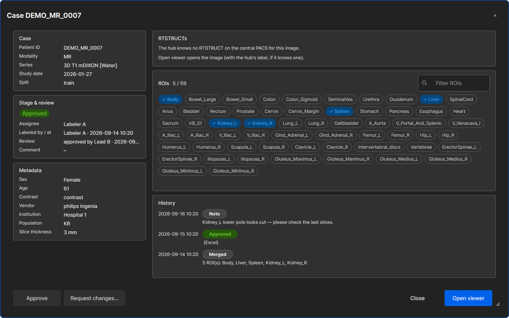

<!doctype html>
<html lang="en">
<head>
<meta charset="utf-8">
<meta name="viewport" content="width=device-width, initial-scale=1">
<title>Labeling Guide</title>
<link rel="preconnect" href="https://fonts.googleapis.com">
<link rel="preconnect" href="https://fonts.gstatic.com" crossorigin>
<link rel="stylesheet" href="https://fonts.googleapis.com/css2?family=IBM+Plex+Sans+Condensed:wght@500;600&family=IBM+Plex+Sans:ital,wght@0,400;0,500;0,600;1,400&family=IBM+Plex+Mono:wght@400;500&display=swap">
<link rel="stylesheet" href="../assets/docs.css">
</head>
<body data-root="../">
<div class="wrap">

<header class="page">
  <span class="eyebrow">Guide · oncostudio (OncoStudio side) + labeling-server / labeling-web (hub side)</span>
  <h1>Labeling: from assignment to delivered structure set</h1>
  <p class="lede">After this page a labeler can find their work in OncoStudio's <b>Labeling</b> tab, draw against the
  project's ROI list, save so the hub records it, react to a review comment, look up records and search data, and use
  an AI pre-label; a lead can review from OncoStudio and create assignments in the hub.</p>
  <p class="meta">Last verified 2026-10-08 · CONTRACT v1.18 §4, §5, §12, §13, §25.3 · <span class="owner">owners: oncostudio, labeling-server, labeling-web</span></p>
  <div class="toc"></div>
</header>

<section id="before">
  <h2>Before you start</h2>
  <ul>
    <li>You have the <b>labeling build</b> of OncoStudio installed (the installer from the data team) and a hub account with <code>is_labeler</code>; your OncoStudio login is bound to it (hub › 계정 › 연결, or an admin binds it). Hub admins can see your hub password (D94, <a href="../roles.html#passwords">why</a>) — never reuse one from another service; change it on hub › 계정.</li>
    <li>Everything you do with the hub is in OncoStudio's <b>Labeling</b> tab (main-window tab bar, next to Settings): <b>Projects</b> and the <b>Project</b> you opened (D110: the former My work and Hub pages are gone). The hub's web UI is for training and administration; as a labeler you only need it for your account (D92, D95, D98).</li>
    <li>OncoStudio talks to the production hub; your login registers itself on the hub at sign-in (CONTRACT §14), so the Projects page fills at once. Patient ids and names are shown in full (U5).</li>
  </ul>
</section>

<section id="projects">
  <h2>0 · Projects: create one, or open one</h2>
  <ol>
    <li><b>Labeling › My works</b> (D153; v1.20 §27.3) is the first page, in two lists. <b>To label</b> — the items assigned to you across every project: project, patient id, study date, series, the <b>stage</b> pill, the label checks, who assigned it, ROIs done, the latest review note and the due date (changes requested first). <b>To review</b> — the items whose reviewer is you, labeled or in review, with who labeled them and when. A click (or a double-click) on an item opens its project with the case window. Both lists refresh with the project poll (≤ 30 s), so an item a lead assigns to you shows up within half a minute. With nothing to do it says how to get work and offers <b>Go to Projects</b>; on a hub older than 1.20 <i>To label</i> comes from your assignments and <i>To review</i> says it needs hub 1.20. Every list counts <b>items</b> (U16): an item is one image series of one study — two studies of one patient are two rows, never merged.</li>
    <li><b>Labeling › Projects</b> lists every project, the most recently active first: the code (finished ones say so), modality · region, a <b>progress bar</b> in the stage colours (hover it for Approved · Review · Labeled · Assigned · Unassigned), <i>done / total</i>, the labelers as chips (most active first), <b>Valid set</b> (patients held out for validation) and <b>On this PC</b> (image series already in your Local SCP; checked on your PC only — a project is counted when you open it, “—” until then). Search by code, name or RT name, filter Ongoing / Finished, modality and region; <b>Columns ▾</b> adds the target-ROI count and the status. <b>New project…</b> is the main button. <b>A single click on a row opens the project</b> (v1.28 §41.1; Enter opens the current row too) — there is no <i>Open</i> button and no double-click any more. A <b>right-click</b> on a row opens its menu: anyone can <i>Mark finished / Mark ongoing</i> (v1.17, D145; greyed out for a project closed by a lead, which is finished too), and a lead or an admin also sees <i>Delete project…</i>; both are also in the opened project's <b>⋯</b> menu.</li>
    <li><b>New project…</b> (any labeler may) walks four steps (D153; U23, 2026-10-10): <b>Basics</b> — code, name, modality, region (an empty or an existing code is refused right there; since v1.54 §59.1a, U140, the hub puts no length limit on the code, the name or the Structure Set name and serves them in full); <b>Target ROIs</b> — the <a href="#roi-checklist">target-ROI checklist</a> (v1.40 §59.1), a name that is not in the registry kept as typed; <b>Rules</b> — the <b>Structure Set name</b> (v1.40 §59.1a, U91: already filled with the project name — the code when there is no name — as you type them; change it if you want, clear it to get the project name back; any length — the page shows and saves it whole (v1.54 §59.1a, U140); never required), patient-id pattern (checked), the default purpose and data level for saves, the goal; <b>Confirm</b> — everything that will be created, then <b>Create</b>. <b>Back</b> keeps what you typed. There is no &#8220;start from another project&#8221; and no selection-rule step: after creating the project you add its items with <b>Add items…</b> (pick them by hand); a lead can still give the project a selection rule later (<b>⋯ › Edit selection rule…</b>, <a href="#selection-rule">the rule</a>).</li>
    <li id="roi-checklist"><b>The target-ROI checklist</b> (v1.40 §59.1, U89, D252, D254 — the New project stepper's <i>Target ROIs</i>
      step, the project's <b>⋯ › Edit project…</b> on the web, the project page's <b>⋯ › Edit target ROIs…</b> in OncoStudio, and
      the Training wizard's <i>From scratch</i> target ROIs): the ROI registry (hidden ROIs left out) as one list of tick boxes,
      each row the official name with its alternative names in grey. The list is <b>flat</b> while the registry gives no body
      region (today none does, D254); once it does, the rows are grouped by region under headers, the ones without a region
      under <i>Other</i>, and a group header ticks or unticks its whole group. To pick many at once: type in the filter (official or alternative names; case and
      spaces do not matter) and press <b>Enter</b> — every row shown is ticked when the filter leaves 50 or fewer (more, and it
      tells you how many match); <b>Shift-click</b> ticks the rows between the last one you clicked
      and this one; or <b>Paste names…</b> a list separated by commas, semicolons or new lines — the matches are ticked
      and the names the registry does not know are listed back (<i>Add as new ROI(s)</i> keeps them as typed; in the
      Training wizard it registers them as the hub's own ROIs, §45.4). The keyboard: Space ticks the focused row, ↑ ↓ move.
      The ticked ROIs show above the list as chips in the order you ticked them (× removes one), with the count and
      <b>Clear</b>; that order is the project's target-ROI order. What is saved is the same list of names as before.
      <span id="edit-target-rois"><b>Edit target ROIs…</b> (OncoStudio, a lead, hub 1.40 or newer; D254): the project page's
      <b>⋯</b> menu opens the same checklist with the project's target ROIs already ticked in their order; <b>Save</b> is enabled
      once the set changed and stays waiting for the hub. A ROI that already has labels in the project cannot be removed — the
      hub's sentence (<i>ROI Spleen has labels in this project</i>) is shown in the window and nothing changes; a removed ROI's
      goals and alternative names go with it. On an older hub, and for anyone who is not a lead, the item is not shown.</span></li>
    <li id="external-label"><b>An RTSTRUCT made outside as the item's label</b> (v1.40 §59.2, U90, D253 — OncoStudio): the
      <b>Add items</b> dialog has a <b>Label</b> column. It reads <i>none</i> (or <i>none · 1 on the Local SCP</i> when this PC
      holds an RTSTRUCT of that study); a click opens the item's <b>Label</b> window: the study's RTSTRUCTs <b>on this PC's
      Local SCP first</b> (most work starts there), then the ones the hub knows (ONCOPACS, the hub's store), each with its
      description, date, ROI count, <i>matched n of m target ROIs</i>, where it is (<i>made here</i> when it was born in the
      project) and a note — <i>suggested</i> on the newest Local-SCP file that covers a target (never ticked for you); a file
      that covers none of the targets, or cannot be read, cannot be ticked and says why. <b>A local file…</b> takes one
      <code>.dcm</code> from disk. Tick one and <b>Use as label</b> (<b>No label</b> clears it); the cell then reads
      <i>TPS_export · matched 2 of 3 target ROIs</i>. When you add the items, an ONCOPACS / hub file goes with its item and a
      Local-SCP or disk file is read on this PC, de-identified like a saved label (no patient name) and sent right after
      the add; the status line says per item <i>label imported — matched n of m target ROIs</i>, or the hub's sentence and
      <i>The item stays added without a label.</i> The hub takes files up to 64 MB (or the limit it announces); a larger file is refused on this PC with the hub's sentence <i>the RTSTRUCT is larger than 64 MB, the hub's import limit</i>. On an item already in the project the
      case window's <b>Import as label…</b> opens the same window. Adding an item <b>without</b> a label is still the plain
      case: the Label column starts at <i>none</i>, <b>No label</b> is always there, and such an item is added, assigned,
      opened and auto-contoured as before (U95). When you tick a file, its ROIs appear below as the same checklist as the
      target ROIs (filter, Enter, Shift-click, Paste names…, chips): the ROIs matching the project's target ROIs are ticked,
      tick more or fewer (at least one); the file is sent whole and the label is the ticked ROIs — opening it shows only
      those (U96; until the hub takes the choice it keeps its default, the ROIs matching the target ROIs). While the file goes to the hub the window says
      <i>Importing the label… Open viewer waits until it is in.</i> and <b>Open viewer</b> is off, and once it is in the
      window's <i>Opens:</i> line names the new label — the first <b>Open viewer</b> loads it (U94; before, it opened the
      image alone and only a second open had the label). The imported file is the item's label like a human
      save (stage <i>labeled</i>): opening the item loads it from the hub, and your save makes a new revision over it.
      The labeler column and the case window say <i>· external</i> for such a label. Hub 1.40 or newer.</li>
    <li id="already-item"><b>Adding an image that is already an item</b> (v1.40 §59.2, U101, D266): Add items does not refuse it — the row reads <i>already an item · stage · labeled by …</i>, and Add imports the file you chose in the Label column as that item's label; a file that is already the label says so (<i>already this item's label, imported at …</i>) and nothing changes. In OncoStudio the row can be picked like
      any other (the rule never ticks it); picked without a label it is <i>nothing to add</i> (Add stays off when nothing
      else is picked), and after Add a window offers <b>Open</b> on that item (its case window). On the web the note sits under the series; such a row is ticked on its own (a patient, a study or <i>Select all</i> still take only new images), and ticked with no label it is left as it is (<i>already an item without a label chosen — left as they are</i>).</li>
    <li id="interactive-seg-local"><b>Interactive Seg leaves the rest of the ROI alone</b> (U106-3): a click with Interactive Seg (nnInteractive) changes the ROI only where it acts — an <b>include</b> click only adds to the ROI, an <b>exclude</b> click (or <b>− Exclude</b> on) removes only the part connected to where you clicked, and slices you did not prompt keep what you drew. The same holds for <b>Refine</b> after a Brush / Pen correction. To take away a part the model added, place an exclude on it; <b>Undo prompt</b> puts back exactly what the last prompt changed. The same holds with the <b>GTV (tumor)</b> model (U107-c): a click only adds, a slice you corrected and press Run on is kept exactly as you drew it, and Undo prompt puts the ROI back without running the model again.</li>
    <li id="interactive-seg-stopped"><b>If Interactive Seg stops</b> (U110): the message reads <i>Interactive Seg stopped unexpectedly. Press Run again to restart it.</i> Press <b>Run</b> (or <b>Refine</b>) again: the model restarts by itself and your prompts and ROI are kept. If it keeps happening, send the log file named in the message (the message stays on screen for 10 seconds), e.g. <code>C:\ProgramData\Oncosoft\OncoStudio\log\202610\OncoStudio_20261023.jsonl</code> for 23 October.</li>
    <li id="interactive-seg-window"><b>Limit to window</b> (U105): on the Interactive Seg bar, right of <b>− Exclude</b>. Off by default. When it is on, what a click (or Refine) adds is kept only where the image is inside the window of the view you clicked in — bone, lung or a window you set by hand. The model itself always sees the whole image, and nothing already in the ROI is removed. The app remembers the setting for your login.</li>
    <li id="drawing-stopped"><b>When a lead stops your drawing</b> (v1.40 §60.5, U100, D265 — OncoStudio): the viewer you have
      open on that item says <i>&lt;lead&gt; stopped your drawing on &lt;patient&gt; (&lt;project&gt;) at &lt;time&gt;. Your
      changes stay on this PC; the viewer is now read-only.</i> The drawing tools are off (a click says why) and <b>Save
      RS</b> saves on this PC only — it asks first, and the file never becomes the project's label. Close the viewer and
      open the item again to continue (if it is still yours).</li>
    <li id="assigned-to"><b>An item someone else holds is theirs</b> (v1.40 §60, U92, D256–D257 — OncoStudio): opening a project
      item that is assigned to someone else (assigned, being drawn, or sent back for changes) no longer takes it. A window
      <i>Assigned to &lt;name&gt;</i> asks first: <b>Cancel</b> opens nothing; <b>Open read-only</b> opens the image for
      viewing — no claim, and nothing you save goes into the project; a lead also has <b>Take over</b>, which makes the item
      the lead's (the former holder sees it in My works). If you are not a lead the window says so plainly —
      <i>Held by LDY — only a lead can take over; ask your lead.</i> — and <b>Assign to…</b> on such an item says the same
      instead of assigning nothing (U106-1). Every refused request is kept in the item's history (<i>assign_refused</i>:
      who asked, their hub role and the hub's answer), so a lead can see what happened (S10). On the web it reads as one line, the status unchanged — <i>SHK asked to take over — refused: assigned to LJM</i>, <i>Assign to… refused: &lt;the hub's sentence&gt;</i> (or <i>Random…</i>, <i>asked to give it back</i>, <i>asked to take it</i>) — in the case page's and the review drawer's History and, badged <i>Refused</i>, in the case dialog's history (W10); a hub that does not send the answer yet shows <i>SHK's request was refused</i>. The hub sends the answer with every history row since S11; a labeler sees their own requests in full and someone
      else's without the name, the role or the hub's sentence. Every History line ends with who and where it came from in words — <i>(OncoStudio)</i>, <i>(hub)</i>, <i>(Excel)</i>, <i>(old task)</i>, <i>(bulk approve)</i>, <i>(taken over by a lead)</i>, <i>(reassigned by a lead)</i>, <i>(labeler removed)</i>, <i>(labeler restored)</i>, <i>(drawing stopped)</i>, <i>(refused request)</i>; one the web does not know yet shows its bare code, never a <code>work.origin_…</code> key (W11). If someone took the item between your click and the hub's answer,
      the same window comes with the hub's name. Saving (<b>Save RS</b>) an item you do not hold — not yours, not as its
      reviewer, not as a lead correcting it — asks <i>This item is assigned to &lt;name&gt;. Your file is saved on this PC
      only and will not be the project's label.</i> with <b>Save locally</b> / <b>Cancel</b>; a file saved that way is
      recorded as <i>saved_local</i>, never sent, never a label of the item (and if the hub decides so on its side, the
      app says the same sentence).</li>
    <li><b>Delete project…</b> (U12, D157; a lead or an admin, hub 1.19 or newer): on the Projects page in a row's right-click menu (v1.28 §41.1) and in the project page's <b>⋯</b> menu. The window says what happens — the project is hidden everywhere (lists, the web, queues, counts) but nothing is destroyed, and an admin can restore it — then asks you to type the project code and the <b>admin password</b> (hidden as you type, never saved; Enter = <b>Delete project</b>). A wrong password is said in the window and nothing changes; after a few wrong tries the hub asks you to wait a minute. On an older hub the item is not shown.</li>
    <li>Open a project (one click on its row): the <b>patients table</b> takes the page (D153, work first). Its columns are the <b>Patient ID</b> and the <b>Patient name</b> — two columns since U104, the name blank when the row has none or it only repeats the id, both shown and sortable — then series, split, the <b>stage</b> as a coloured pill (the web's stage colours), labeler, reviewer, ROIs done, who is <b>drawing</b> it now, and when it was last updated; <b>Columns ▾</b> (or a right-click on the header) adds sex, age, contrast, vendor, institution or round, and hides the patient name if you prefer — the choice is remembered (a choice saved before U104 is kept, with the patient name shown again). Click a header to sort by it; the app remembers your column and direction (per login) and applies them every time you open a project (U106-2) — until you click a header, rows come in the hub's order (Patient ID). Above the table one line: the progress bar by stage with <i>done / total</i>, the stage chips (Approved n · Review n · Labeled n · Assigned n · Unassigned n) and the project line. Directly under that line the <b>statistics</b> (v1.25 §36): bars for split, modality, sex, age, contrast, vendor, institution, country and slice thickness (≤1 · 1–2 · 2–3 · 3–5 · &gt;5 mm, unknown counted; v1.23 §33) and, while the hub still waits for some rows&#8217; headers, <i>Metadata pending n · complete m</i> — shown every time you open a project; <b>Hide statistics</b> folds them away (<b>Show statistics</b> brings them back) and the app remembers your choice. On a hub 1.36 or newer (v1.36 §52) the table has the tabs <b>All · Train · Valid · Unspecified</b> with their counts (<i>All 127 · Train 115 · Valid 12 · Unspecified 0</i>): a tab shows only its rows, and the statistics show those rows only (without the split bar); <b>All</b> keeps the project&#8217;s bars and adds <b>Train | Valid</b> — one row per facet with the two splits&#8217; bars side by side and their shares (<i>train Male 61% · Female 39% | valid Female 58% · Male 42%</i>). Selecting, <i>Mark valid / Mark train</i>, review and open work inside the tab (a row the tab hides leaves the selection), an empty tab says <i>No items in this split.</i>, and the app remembers the tab per project. On an older hub there are no tabs. <b>59 target ROIs ▸</b> opens the Target ROIs panel beside the patients (how many cases have each ROI drawn; a bar only when the ROI has a goal) — closed until you open it, and kept as you left it. Under the tools row, on a hub 1.28 or newer, the <b>loop strip</b> (v1.28 §41.2) — the same line as on the web: <i>No model yet · n labeled of m items · label at least k items, then Train</i>; <i>Model ZZ_LOOP 1.0.0 · DSC 0.81 on 2 validation items · trained 2026-10-14 from 9 labels · 2 new labels since · pre-labels 3/3 ready</i> (before a deploy gives it a version: <i>Model ZZ_LOOP iteration 4 · …</i>, v1.28 §41.10) with <i>Deployed … to /mnt/deploy (DSC x ≥ t)</i> or <i>Not deployed: DSC x &lt; t</i> under it; while a job runs <i>Training… stage 5/16 Preprocess → NPZ + SDF</i> · <i>Evaluating…</i> · <i>Pre-labeling n items…</i> · <i>Deploying …</i> (the page then refreshes every 10 s); a failure <i>Train failed: CUDA out of memory — Train again</i>, a cancelled job <i>The job was cancelled — Train again</i>. Click the model text to see that model on <b>Models</b> (found by its file, whatever family the registry files it under). <b>Train</b> is enabled when the hub says so (its reason is the tooltip otherwise), and in the app it only <b>opens the project on the Labeling Tracker web page</b> in your browser — training is started there (D141); the status line says <i>Training runs on the Labeling Tracker web page — opened in your browser.</i> The lead's <i>Deploy anyway…</i> is on the web only. Selecting a row shows its case cards below the table, on a splitter you can drag.</li>
    <li>The toolbar has three groups: <b>Open</b>, <b>View</b>, <b>Add items…</b> for the daily work; <b>Approve</b> and <b>Request changes…</b> for the selected row (greyed out, with the reason on hover, when it cannot be reviewed); and <b>⋯</b> for the rest — Mark valid / Mark train, Goals…, Mark finished / ongoing, Close / Reopen project and Remove from project. Every action in ⋯ that changes data asks first and says what it will do (“Mark 3 items valid?”). On a hub with v1.20 the ⋯ menu also has <b>Edit selection rule…</b> (a lead). A long project name never pushes the toolbar: the title ends in “…” (hover it for the full name) and every button, ⋯ included, keeps its full width.</li>
    <li id="review-correction"><b>Correcting during review</b> (v1.24 §34, U35): while an item is <i>Labeled</i> or in <i>Review</i>, its reviewer and any lead can open it and fix the label themselves — open it from the project page as usual, edit, save. The save goes to the hub like the labeler&#8217;s (never to ONCOPACS) and becomes the project&#8217;s label: the labeler&#8217;s next open continues from the correction, and the reviewer still decides (<b>Approve</b> approves the corrected file, <b>Request changes</b> sends it back). While you correct, the row reads <i>Review · being corrected by SHK</i> for everyone; afterwards the case window says <i>corrected by SHK · 12:40</i> and the history shows the save as <i>Corrected</i> by <i>SHK (reviewer)</i>. Anyone else&#8217;s save of somebody&#8217;s item stays on their own PC (the hub would refuse it). Only the approved file goes to the central PACS, through <b>Send to central</b> (a lead).</li>
    <li id="metadata-at-add"><b>Metadata comes with the item</b> (v1.23 §33, U32): when you add items, OncoStudio reads sex, age, modality, study date, vendor, model, institution, contrast, slice thickness (and field strength for MR) from the files of your Local store and sends them with the items, so the bars above fill at once. An item from ONCOPACS brings what the PACS search gives (sex, age, modality, study date); the rest is read from the image after its first download — <b>Download selected</b>, <b>Download all missing</b> or opening it — and sent to the hub then. A lead sees <b>Fetch missing metadata (n)</b> beside the panel toggles while rows still lack them: the hub then reads the headers itself from its PACS, and the bars fill as they arrive (the status line says how many rows it reads, for a minute). No name or birth date is ever sent. People appear as the hub names them — the labelers&#8217; initials (<i>LJM</i>), with the login in brackets in the pickers when it differs (<i>LJM (ljm)</i>). A label saved over an auto-contour without changing any of its ROIs gets the warning <i>Auto-contour not edited · all ROIs</i> (Checks column, case window, Label checks panel) — a reminder, not an error (§30).</li>
    <li id="workflow-actions"><b>The selected items' actions</b> (v1.20 §27; hidden on an older hub): a row under the progress strip says how many items are selected and offers <b>Assign to…</b> — pick a person (the hub's accounts, labelers first) and the selected items become theirs and appear in their My works; an item somebody already has but has not started is moved only after you confirm it; an item being worked on, approved or sent is refused, and the refusals are listed with the hub's reason (“held by kim”); <b>Random…</b> — <i>n</i> items drawn from the unassigned ones for a person, with an optional seed (the status line says the seed used; the same seed draws the same items); <b>Reviewer…</b> — who reviews the item (only people who can review are offered; the labeler sets it once the item is labeled, a lead at any stage from labeled on; greyed out with the reason otherwise); <b id="autocontour-in-app">Auto-contour…</b> (v1.22 §29, U27–U28) — runs <b>on this PC</b>: OncoStudio's own auto-segmentation engine (the one of the Auto-Segmentation tab, with the models installed with the product and this PC's GPU) contours the selected items one after another in the background; you keep working. The first entry, ticked, is <i>Auto-contour all — OncoStudio default pipeline (release 1.6.4, 22 CT / 7 MR models)</i> — the installed release and how many models own a preset ROI per modality (greyed out with the engine's sentence when no model is installed); below it one row per installed model family with its installed version (<i>released (1.6.4)</i> when it belongs to the installed release), only the selected items' modalities, a search box and <i>Show older versions</i> for other installed folders of a family. Ticking families runs those models (each ROI from the model that owns it in the product's presets). <b>ROIs:</b> <i>this project's set (n)</i> by default — only the models owning at least one of those ROIs run (matched by official name or alias) and the file keeps only them — or <i>all ROIs the models make</i> (derived ROIs included when the engine makes them). An item whose image is not on this PC is downloaded first (image only), then contoured. The result is one RTSTRUCT per item in your Local SCP, marked <code>AI_PRELABEL</code> (<i>SeriesDescription</i> <code>AI_PRELABEL default pipeline 1.6.4</code>, <i>StructureSetDescription</i> <code>default pipeline 1.6.4 CT (1 model) · by ljm</code> or the model list), its ROI names exactly as the engine makes them — no <code>_pre</code> any more (files made before v1.22 keep theirs and still open). The hub records it (hub 1.22): <i>running</i> at each stage, <i>ready</i> with the file (so the web and other PCs see it and open it), <i>failed</i> with the engine's reason; on an older hub the line says <i>hub 1.21 — the result stays on this PC</i>. Right after OK the status line says <i>Auto-contour queued on this PC for 2 item(s) — default pipeline 1.6.4, project ROIs (4)</i> (and which selected items were skipped: a human label, excluded, sent, not assigned to you); the <b>Auto-contour</b> column shows ⏳ queued, then <i>▶ running · stage 1/5 download image</i> / <i>stage 2/4 segment Abdomen 52 %</i> with a thin bar (stages: download image when needed, detect regions, segment, write RTSTRUCT, store), then <i>✓ default pipeline 1.6.4 · project ROIs (4)</i> or <i>✕</i> with the reason on hover (<i>Run in OncoStudio by ljm</i>); the chip <i>Auto-contour 1 running</i> opens the <b>Auto-contour jobs</b> window with one line per item (project, modality, item, what runs, stage, started, elapsed, result). If the hub refuses an item (<i>row has a human label</i>, <i>row is excluded</i>, <i>row is in the frozen validation set</i>), its sentence is the item's result and the engine is not started. <b id="target-rois-run">Only the target ROIs</b> (v1.26 §38): <i>Auto-contour…</i> always makes the project&#8217;s target ROIs and nothing else. Each run leaves one RTSTRUCT on this PC &#8212; <i>AI_PRELABEL</i>, the targets only (D197); it runs only on the whole image series: right after a download it waits until every slice is in the Local SCP, and a series with missing slices is refused with the reason (2026-10-13). The rows you had selected stay selected when the list refreshes after a run. The picker lists each target with the model chosen for it (<i>liver_segment_3 ← Liver_Segments 1.0.0 (on the server, 150 MB)</i>) and only the models that make a target (<i>Show all models</i> shows the rest, greyed); one model per target is ticked for you — the installed release&#8217;s, else the newest installed one, else the newest on the server. A target that no ticked model makes stops the run before it starts with that sentence (<i>no model makes liver_segment_3</i>); a project without target ROIs cannot run auto-contour. ROIs an admin hid for a model on the hub (v1.36 §50, D230) are not made on this PC either: a target only such a ROI would give reads <i>liver_segment_3 — no visible model makes it</i> and the other targets still run (only when every target is like that the picker says <i>no visible model makes …</i> and nothing runs); the item&#8217;s result then reads <i>ready · 3 ROI(s) · dropped (hidden): liver_segment_3</i>, and the model&#8217;s tooltip names its hidden ROIs in grey. When an item fails, its row says <i>failed · &lt;the reason&gt;</i> (and the status line repeats it when you select the row); an item not on this PC first shows <i>downloading image</i>. <b id="hub-models">The hub&#8217;s models</b> (v1.25 §35, U38 + U40): below the installed ones the picker lists, under <b>On the server</b>, the models the hub knows that this PC does not have (for example <i>Liver_Segments · CT · 1.0.0 · on the server · 150 MB</i>, what it makes on the line below and on hover). Tick any of them, alone or with installed ones: on OK the model is <b>downloaded to this PC once</b> (the item&#8217;s first stage reads <i>downloading Liver_Segments 1.0.0 · 150 MB · 43 %</i>; a busy hub is waited for, a cut download resumes), checked against the hub&#8217;s registry, kept in <code>C:\ProgramData\Oncosoft\OncoStudio\model_cache</code> and then <b>run here</b> like an installed model — the server never runs it. The next time it says <i>downloaded 1.0.0</i> and starts at once. A file that does not match the registry is deleted and the item fails with that sentence. The Models page&#8217;s <b>Remove downloaded model</b> frees the disk (it is downloaded again when ticked). An older hub greys the section with the reason. <b id="every-version">Every deployed version</b> (v1.47 §35.5, U129, D297): each model family is a bold header row (<i>Rib01_L_Rib02_R_… · CT · 3 version(s) · project RIBS</i>) and <b>every version</b> the hub has deployed is its own row under it, newest first — <i>1.0.2 · latest · downloaded · DSC 0.854 · 26 ROI(s) · deployed 2026-10-26</i>, <i>1.0.1 · on the server · 75 MB · DSC 0.183 · …</i> (marks: <i>latest</i>, <i>released</i>, <i>installed</i>, <i>downloaded</i>, <i>on the server · size</i>; hidden versions stay out); there is no <i>Show older versions</i> any more. Pre-ticked per target: the version of a family you ran last on this PC, else the installed release&#8217;s owner, else the newest installed model, else the family&#8217;s <i>released</i> version, else its latest. Any rows may be ticked, two versions of one family too (each is downloaded and run as today; each target is taken from the first ticked model that makes it). The filter box matches a family, a ROI, a version or a project. The dialog opens at about two thirds of the main window (never smaller than 900 × 600), can be resized from its bottom-right corner, and keeps its size and position on this PC. Rows run on another PC show the hub's state as before; <b>Send to central</b> — the selected <i>approved</i> items whose label file the hub holds go to the central PACS after a confirmation that lists them, the ones that cannot go (and why) and the destination; greyed out with the reason when nothing selected can be sent or the hub has no destination configured (then the hub's own answer, <i>central destination not configured</i>, is said in the status line). Assign to…, Random… and Send to central are a lead's; Auto-contour… is a lead's, or the assignee's on their own items (v1.22); Reviewer… is the labeler's too. A sent item's stage is <b>Sent</b> (after Approved) — in the stage pill, the strip's chips and the counts — and it is final. A refusal (with its reason) stays readable on the status line for a minute, and your selection survives the page&#8217;s refresh. <b>Send to central</b> can take a few seconds per item — the app waits for the hub&#8217;s answer.</li>
    <li><b>Local</b> column and bulk download (D158, U22): <i>Local</i> = the image series is in this PC's Local SCP (downloaded and imported — opening skips the retrieval), <i>Not local</i>, or <i>?</i> (not checked yet / no series). It says nothing about labels: an RTSTRUCT of the study on this PC does not make a row local. It is checked on this PC only and never sent to the hub; <b>Not local only</b> (beside <b>With findings</b>) shows only the rows whose image is not here. <b>Download selected</b> fetches the selected rows, <b>⋯ › Download all missing…</b> every row whose image is not local (after a confirm with the count) — <b>the image series only</b>, always (what opens with it is decided when you open the item), two at a time. A download takes no case and changes no stage. The <b>Downloads</b> window shows a line per item (step, objects received / expected, result), the overall n / m and <b>Cancel all</b>; you can close it and keep working — the <b>Downloading 3 / 12</b> chip in the toolbar opens it again. Each finished item updates its Local cell. When an image cannot be brought in, the line says which PACS was asked for which series and study and what arrived (for example <i>Asked ONCOPACS for series … of patient … (study …): it reported 0 objects sent … — ONCOPACS does not hold this series, or it cannot send to this PC's Local SCP</i>).</li>
    <li><b>Label checks</b> (D159, hub 1.19 or newer): the hub examines every label and the project table's <b>Checks</b> column shows the result — <i>2 ⚠ 1 ✕</i> = two warnings and one error, <i>✓</i> = nothing found, <i>—</i> = not checked yet (also right after the hub was updated, before its first checks run — the card and the panel then say <i>Not checked yet</i>); sort it to bring the worst to the top, or switch on <b>With findings</b>. The case window's <b>Label checks</b> card lists the findings, errors first: what (<i>Missing slice</i>, <i>Empty ROI</i>, <i>Tiny fragment</i>, <i>Duplicate ROI</i>, <i>Unusual shape</i> / <i>position</i>, <i>Single slice</i>, <i>Left / right swapped</i>), the ROI, the slice z, the value and the range the project's other labels give. <b>Label checks ▸</b> opens a side panel: per ROI the number of samples and whether the statistical checks are on (they start once a ROI has enough samples — the lead sets that number there), and the items with findings by severity; click one to select its row. Findings inform the review and never block a save. On an older hub the column is hidden and the card says the hub does not compute checks.</li>
    <li><b>Add items…</b> (D153; bug 2026-10-09; v1.20 §27.2): choose the local store or a PACS and fill the common fields — patient ID, name, a study-date range, modality, description (<b>More filters ▸</b> adds study description, series date and tag). The search runs in the background and the results appear as they are built — a tree, patient › study › series. <b>Pick</b> rows the way you pick files: <b>click</b> picks one row, <b>Shift+click</b> a range, <b>Ctrl+click</b> adds or removes one, <b>dragging</b> over rows picks them all (Ctrl+drag adds them), and the tick box of a row adds or removes it. A picked patient or study brings all its image series (its tick turns half-filled when only some are picked); <b>Select all results</b> and <b>Clear</b> sit above the list. RTSTRUCTs, doses, series already in the project and series the hub cannot take — an id with spaces or other characters, or a patient without an ID — cannot be picked; the note says why. A series whose files carry a <i>UUID</i> instead of a DICOM UID (some exports do; D174) <b>can</b> be added — its note says <i>a UUID-form id written in the file (not a DICOM UID) — added as it is</i>. A patient or a study with nothing left to add cannot be picked either, its note giving the reason; when the local store holds only an RTSTRUCT of a study, the note says so and where to add it from: <i>image not in the Local SCP — only RTSTRUCT here; choose the PACS ONCOPACS source to add it</i> (choose that source in <b>Search in</b>, search again and pick the image series — it is retrieved when you open the item). Under the results, the <b>statistics of what you are adding</b> (v1.25 §36): <b>Selected (m)</b> beside <b>Results (n)</b> — modality, sex, age, contrast, vendor, institution and slice thickness, binned like the project&#8217;s bars; they change with every tick and every search. From the local store the values come from the files (read in the background — the titles say <i>reading the headers…</i> meanwhile); a PACS search only knows sex, age and modality, so the other bars say <i>unknown</i> until the items are added and downloaded. The bar at the bottom says “n series from m patients”; <b>Assign them to me</b> (on by default) makes them your work; <b>View selected series</b> opens the highlighted series in the viewer without adding it. <b>Add selected</b> reads the facets from the files in the background, sends the rows (500 per request) and <b>stays open until the hub answers</b>: if the hub refuses, its reason is shown in red in the dialog (for example “The hub refused the add (400): not a DICOM series UID: …”) and you can change the pick and try again; when it is done the dialog closes and the project page says how many were added.</li>
    <li id="add-items-columns"><b>Columns, sorting and the filter in Add items</b> (v1.26 §37): beside each patient, study and series the
      dialog shows Sex, Age, Modality, Vendor, Institution, Slice (mm), Contrast and Study date — a study or patient shows <i>mixed</i> when its
      series differ and <i>–</i> when nothing is known. Click a column header to sort by it (click again for the other order; unknown values stay
      last). Type in <b>Filter results…</b> to keep only the rows where every word appears somewhere (<i>female siemens</i>); the Results bars follow
      the filter and what you already ticked stays ticked. <b>Columns ▾</b> hides columns you do not need; the choice is remembered.</li>
    <li id="roi-aliases"><b>Alternative names of a target ROI</b> (v1.26 §39): in the Target ROIs panel double-click a target (or right-click →
      <i>Edit alternative names…</i>). The names from the ROI registry show as grey chips; a lead types this project's own names into <i>Add a name… (Enter or comma)</i> — Enter or a comma makes a chip, × removes one, a pasted list adds several — and presses <b>Save</b> (v1.27 §40: a duplicate, thetarget's own name or another target's name is refused in red under the field before saving). A drawn ROI or a model's output with such a name then counts as that target in this project — its name in the
      file is not changed. The panel shows how many names a target has (<i>liver_segment_3 · 1 name</i>).
      <span id="hidden-targets">v1.36 §50: a target ROI an admin hid (관리 › Hidden) stays in the project and is
      marked (<code>rois[].hidden</code>), but new projects and the From-scratch wizard no longer offer it. A local
      auto-contour run with a model an admin hid is refused with <i>model hidden by admin</i>, and the model's hidden ROIs
      (<code>rois_hidden</code> in the model list) are not written into the auto-contour (D230, OncoStudio). Since v1.37 an
      admin can also hide a whole <b>project</b>: it stays labelable exactly as before (the worklist, deliveries,
      reviews, its project page), but leaves the ROI roadmap and the public overview; the projects list and the project
      page mark it <code>hidden: true</code> — on the web a <i>hidden</i> badge next to the code in <b>Projects</b> and
      in the project page's title (its tooltip says what it means). Use it instead of archiving when the labeling goes
      on.</span>
      <span id="official-names">Since v1.34 (§48) the training executor names everything it gives back — a model's
      classes, its DSC per ROI, a pre-label's ROIs — with the registry's <b>official</b> name (<i>CTVn_LN_Ax_L2_L</i>),
      while the project may spell the target as one of its alternative names (<i>CTVn_L2_L</i>). The hub reads those
      names through the same alternative names, so they count and show as the project's target: a pre-label's
      <i>CTVn_LN_Ax_L2_L</i> covers <i>CTVn_L2_L</i>, and the case window's correction effort lists it neither as added
      nor as dropped.</span></li>
    <li id="add-items-rule"><b>Add items with the project's rule</b> (v1.20 §27.2, D164; optional since U23 — a project without a rule shows nothing about rules and you pick by hand): when the project has a selection rule, the dialog shows it in one line above the results (<i>Rule: MR · description ~ t2 · not scout|loc · one per study, thinnest</i>) and, once the results are listed, ticks what the rule selects in every listed study — the series' slice thickness and contrast are read from one file per series of the local store in the background first (a PACS search has no such values, so a rule that needs them ticks nothing there). A study with no series that matches is listed greyed out with <i>no series matches the rule</i>; hover a series for why the rule left it out. You can tick or untick anything before <b>Add selected</b>; <b>Clear</b> empties the pick and <b>Apply rule</b> ticks the rule's pick again. The pick is counted in items: <i>14 items from 5 studies</i>. With a PACS search the series of each patient are listed as the PACS answers; the line above the results counts what the rule has ticked so far.</li>
    <li>Click a patient and <b>Open</b> (or double-click): the <b>case window</b> comes first (v1.17, D148 — see <a href="#case-window">Opening a row</a>); its <b>Open viewer</b> assigns the case to you if nobody has it yet; then the image is retrieved from the PACS if needed, the AI pre-label pulled, and the series opens <b>with the labeled data</b> (v1.14, D136): the labelers' RTSTRUCTs of that study on the PACS (the hub's pointer first — the newest one whose description carries the project's RT name — else a search of the study on the source nodes) are retrieved and the newest matching one is opened with the image; the status line says what was opened and from where. While it is open, everyone sees "you are drawing" on that row.</li>
    <li><b>Old rows with several RTSTRUCTs on the PACS</b> (v1.15, D140): for a row that was labeled before the hub existed, the hub combines every RTSTRUCT attached to the image on the central PACS (except series named <i>OncoStudioAutoGenerated</i>): every ROI is taken, and when the same ROI exists in several files the most recent one wins. The merge is kept as a record in the hub's database only (which ROI comes from which original RTSTRUCT) — no new RTSTRUCT is created or sent anywhere; opening the row brings the original RTSTRUCTs from the PACS. Its ROI names are what the ROIs column counts; the tooltip of the ROIs cell says how many files were combined. Rows saved through the labeling build are never merged — those are unambiguous. Merged files are not used for training until they are delivered to a PACS the pipeline reads. On the web board such a row carries a <i>merged</i> tag in its Series cell (hover it for the sources and ROIs). The PACS can file a series under two PatientIDs and its RTSTRUCTs under only one of them; the hub finds them by the row's study whichever PatientID they carry (D156).</li>
    <li><b>Rows that are not linked to a series yet</b> (data-list rows, v1.14, D133): the Series column shows the sheet's hint in grey (e.g. <i>T1 fat</i>) and the row still shows the patient's name, sex, age and vendor when the PACS knows the patient from another series (the hub borrows them from the patient's other cases; the description is never borrowed). The hub links the row to a series when the hint matches one series description unambiguously, or when exactly one of the candidate studies holds a labelers' RTSTRUCT of the project; otherwise the hint stays and the row opens by patient as before.</li>
  </ol>
</section>

<section id="selection-rule">
  <h2>The selection rule — what Add items ticks (v1.20 §27.2)</h2>
  <p>A project's rule says which series of a study are its items. One function, the same in OncoStudio, the hub and the web:
  the <b>candidates</b> are the study's series that pass every filter that is set, in this order — modality; <i>leave out</i>
  (a pattern on the series description, case-insensitive); <i>description</i> (a pattern that must occur in it); contrast
  (<i>contrast</i> = the header names a contrast agent, <i>non-contrast</i> = it names none); slice thickness (from / to, mm);
  at least <i>n</i> images. A value the series does not have (a thickness no header said) fails a filter that needs it.
  <b>One per study</b> keeps the single best candidate — the thinnest, the one with the most images, or the newest — and a tie
  goes to more images, then the newer series; <b>every match</b> keeps all candidates. No candidate = the study is shown
  greyed out with <i>no series matches the rule</i>.</p>
  <table>
    <tr><th>Rule</th><th>The study's series</th><th>Ticked</th></tr>
    <tr><td>MR · description <i>t2</i> · leave out <i>scout|loc</i> · one, thinnest</td><td>T2 TSE 5 mm (30) · t2 tse 3 mm (50) · scout T2 1 mm · DWI b800 · a CT</td><td>t2 tse 3 mm (the scout is left out, DWI does not match, the CT is not MR)</td></tr>
    <tr><td>the same</td><td>T2 cor 2 mm, 20 images · T2 ax 2 mm, 40 images</td><td>T2 ax (same thickness → more images)</td></tr>
    <tr><td>MR · one, newest</td><td>T1 at 10:00 · T1 post at 12:00</td><td>T1 post</td></tr>
    <tr><td>1–3 mm · every match</td><td>1 mm · 3 mm · 5 mm · thickness unknown</td><td>1 mm and 3 mm</td></tr>
    <tr><td>contrast · one, most images</td><td>native (none, 200) · venous (Omnipaque, 150) · arterial (unknown, 300)</td><td>venous</td></tr>
    <tr><td>MR · description <i>t2</i> …</td><td>DWI b1000 · ADC</td><td>nothing — <i>no series matches the rule</i></td></tr>
    <tr><td>at least 30 images</td><td>12 images · unknown · 31 images</td><td>the 31-image series</td></tr>
  </table>
  <p>These are the examples OncoStudio's unit tests check (headless <code>labeling-assignments</code> LA-53).</p>
</section>

<section id="find">
  <h2>1 · Find your work</h2>
  <ol>
    <li>Open the <b>Labeling</b> tab › <b>Projects</b>, open your project: the patients table shows every case with its <b>stage</b> — <b>Unassigned → Assigned → Labeled → Review → Approved</b> (and Excluded) (v1.18, D149: the hub computes it; someone drawing right now shows as <i>Assigned · drawing</i>, a review that asked for changes as <i>Review · changes requested</i>; the progress bar and the Projects list count rows by the same five stages), the <b>labeler</b> and <b>reviewer</b> columns, the patient id and the patient name (two columns), the split (blank until a lead or a round states it — U6) and the facets.</li>
    <li>Rows that came from the data list may show no series yet: <b>Open</b> / <b>View</b> then look the patient up in your Local SCP and on the central SCP, retrieve the image series (and the RTSTRUCT that matches the project) and open it; the row is taken on the next refresh (D112). A row whose listed series is not on any configured PACS node says so ("… was not found on ONCOPACS — it cannot be retrieved"); such rows come from the data list and need the data owner, not a retry (D112a).</li>
    <li>When you open a row the hub knows only by patient, the series you opened becomes that row's series (one row per project, your project's modality); rows the hub could not resolve by itself because the patient has several series are settled this way (D112b).</li>
    <li><b>Click a row once</b> and the panel under the table shows the same cards as the <a href="#case-window">case window</a> — Case, Stage &amp; review and Metadata side by side, under them the project's <b>ROI</b> chips with the done ones checked (hover for who and when) and the History timeline (v1.18, D151; D152). Every card is shown whole; scroll the panel for the ones below.</li>
    <li>Select a row and <b>Open</b>: an unassigned case is taken for you first; a case someone else holds is never handed to you by opening it (v1.40 §60.1, D256 — D101's "never opened" hand-over is withdrawn): the hub answers <i>assigned to &lt;name&gt;</i>, and only a lead may <b>Take over</b>; the image is retrieved from the source PACS if it is not on your PC, the AI pre-label is pulled when there is one, and the series opens. <b>View</b> only looks at a case without taking it (D105). Assignments that belong to a <a href="rounds.html">labeling round</a> show the round number.</li>
    <li><b>Add items…</b> searches the local store or a PACS and adds the picked series to the project (a project with a selection rule has them ticked for you, v1.20); the hub completes each new row from the central share at once (series description, study date, facets — D109).</li>
    <li>The DICOM browser still works as usual; series that belong to a project by its patient-ID pattern still count — the save records the assignment you opened.</li>
  </ol>
</section>

<section id="draw">
  <h2>2 · Draw against the project's ROI list</h2>
  <ol>
    <li>The session looks exactly like the regular product (D103): there is no checklist or banner in the ROI tab. The project's target ROIs are listed on the Project page header; aliases are accepted (the ROI registry maps them), but the official name is what the hub records.</li>
    <li>Every stroke, tool change and edit command is recorded locally and uploaded in the background; you do not need to do anything, and drawing never waits for the network.</li>
    <li>Auto-segmentation and interactive tools are available as in the regular product; their use is recorded as tool events so effort per ROI can be measured.</li>
    <li id="roi-overlap-keys"><b>Overlapping ROIs</b> (U131): press <b>A</b> to mark the selected ROI as an <i>Avoid ROI</i> (press again to unset it), and <b>Shift+A</b> to <b>subtract the overlap</b> from the selected ROI — every voxel inside an Avoid ROI is removed (no Avoid ROI set: every voxel inside any other visible ROI). It is one edit: <b>Ctrl+Z</b> brings the ROI back. The same commands are on the ROI's right-click menu with their keys; change the keys in Settings › Shortcuts › Tool Shortcuts.</li>
    <li id="viewer-keys"><b>Shortcut keys in the viewer</b> (O34, U161 — 2026-11-09): the viewer's keys (tools <b>1–9</b>, <b>A</b> / <b>Shift+A</b>, <b>I</b>, <b>F</b>, <b>V</b>, <b>H</b>, <b>Ctrl+Z</b>, <b>Ctrl+S</b>, …) now work wherever the keyboard is in the viewer window, not only after a click in an image. After you type a value or an ROI name and press <b>Enter</b> (or <b>Esc</b>), the keyboard goes back to the image you used last, so the next key is a shortcut again — before, a key pressed right after naming a new ROI or changing the Brush Size did nothing until you clicked an image. While a text field is being typed in, letters and digits still go into the field. The keys that delete contours or ROIs (<b>Del</b>, <b>Shift/Ctrl+Del</b>, <b>X</b>, <b>Ctrl+Shift+D</b>) still act only after a click in the viewer. The Korean input mode (한/영) does not matter: in the image the keys work in Hangul mode too. One key does one thing: if Settings › Shortcuts gives the same key to two commands, only the first one gets it (the app log names the clash).</li>
    <li id="tool-bar-fixed">The tool-option bar above the viewports (brush size etc.) no longer makes the images jump when you change tools: while it is docked (outline pin) its row stays put — empty for a tool without options. Click the pin to float it over the images instead, as before.</li>
    <li id="ai-usage-recorded">Each AI result is recorded with what it made: an Auto Segmentation run, each Interactive Seg / GTV result (with the number of prompts), and an AI pre-label you open (v1.47 §62). What you do to those ROIs afterwards (brush, pen, rename, delete, Undo prompt) is recorded against that result, and the save lists for each ROI whether it came from AI and how many edits followed. Records then shows for each AI use whether you <b>accepted</b> it as-is or <b>edited</b> it. You do not need to do anything.</li>
  </ol>
</section>

<section id="save">
  <h2>3 · Save so the hub records it</h2>
  <ol>
    <li>Save the structure set as DICOM. The save dialog is the regular one (D103): the assignment, purpose / data level and the project's Structure Set name are filled in by themselves from the case you opened on the Project page — since v1.40 §59.1a (U91) the dialog always opens with the project's name (its Structure Set name, else the project name, else the code), whatever the opened file was called (an imported outside RTSTRUCT, an AI pre-label). Since v1.50 §59.1a (U133, 2026-10-29) the field is <b>read-only</b> under a project: the name is the project's RTSS name (the hub serves it, never empty — every older project was backfilled with its name), and no control of the labeling build renames a project save; only a save outside any project (<i>No project — the file keeps its name</i>) has a free name. Nothing is asked. Since v1.54 §59.1a (U140, 2026-10-31) <b>no name has a length limit</b> you can see: the dialog, the project pages and the hub show the full name; only inside the DICOM file the <code>StructureSetLabel</code> tag holds the first 16 characters (the format allows no more) while <code>StructureSetName</code> and the series description carry the full name. Since v1.40 §59.1a (U93) the project is <b>the one you opened the item from</b> — a project page row, its case window, My works — and the dialog says so in a <b>Project</b> row under the name; the same image may sit in several projects (the CT-C samples are in four), and opening it from RIBS saves a RIBS file even when you also hold it in another project. An image opened from the Local SCP or PACS browser has no project yet: the <b>Project</b> row lists the projects that hold it, starting at <i>No project — the file keeps its name</i> (or at the project you picked last time for this image, or at your only assignment of it); picking a project puts its name in the Structure Set name. <b>Since v1.56 §73.2</b> (U143, 2026-11-01): the lock follows the <b>item</b> — an image that is an item of any project is saved under that project's name however you opened it (the Local SCP list and the PACS browser included), the Project row lists only the projects that hold the image, and <i>No project — the file keeps its name</i> remains only for an image that is in no project.</li>
    <li id="save-upload"><b>The save names its project and reaches the hub</b> (v1.20 §27.0, §27.1): every RTSTRUCT saved for a project carries <code>StructureSetDescription = oncolab project=&lt;code&gt; assignment=&lt;id&gt;</code> (the label stays the project's RTSS name), so any file on any PACS says which project produced it. Right after the save and its <code>deliverable</code> event, OncoStudio uploads the file to the hub — de-identified for transport (the patient's name, birth date / time, other ids and names, address, phone and mother's name removed; patient id, sex and every UID kept) — through the activity spool on its own thread: the save never waits for it. A failed upload is retried (15 s, 30 s, … up to 10 min); if the hub refuses it, or it still fails after eight tries, OncoStudio says so once in a notice on the main window — the save itself is in your Local SCP, and the next start tries the upload again. The row then shows that the hub holds the label file, and the label checks run for it within a minute. A <i>sent</i> item opened view-only is saved as a plain save, outside the project (no upload).</li>
    <li>A partial ROI set is delivered as it is; the Project page shows what is missing (ROIs done / total).</li>
    <li>On success the hub records a <code>deliverable</code> and a <code>label_revision</code> in state <b>unreviewed</b>; the assignment becomes <code>delivered</code>. Unreviewed labels can already be used for training if a policy or a lead includes that state (see <a href="../flows.html#states">label states</a>).</li>
  </ol>
  <div class="note"><b>Self-assignment</b><span>If no assignment exists for you on that series and you are a labeler, the hub
  creates one at delivery time (the project the series belongs to). Leads see it in the project page like any other.</span></div>
</section>

<section id="review">
  <h2>4 · React to a review</h2>
  <ol>
    <li>When a reviewer asks for changes, the row's stage becomes <b>Changes requested</b> with the reviewer in the Reviewer column; the Project page's history panel shows the full comment.</li>
    <li>Fix and save again: the new structure set becomes the current revision (state unreviewed); the previous one stays in the record as <code>changes_requested</code>.</li>
    <li>Approved assignments leave your list. A lead may approve many rows at once from the project's training view
    (v1.29 §42.3, <a href="review.html#bulk">bulk approve</a>): each row gets the ordinary approve, its history line
    reads origin <i>bulk</i>, and the live feed shows the batch as one line <i>approved n items</i>.</li>
  </ol>
</section>

<section id="prelabel">
  <h2>5 · Use an AI pre-label</h2>
  <ol>
    <li>When the platform has produced a pre-label for your assignment, the row shows an <b>AI pre-label</b> chip. Just open the assignment: OncoStudio fetches the pre-label from the hub by itself (and the image series from the PACS if it is not on your PC yet) and opens the image with the pre-label (an <code>AI_PRELABEL</code> structure set; from v1.22 its ROI names are the model's own, older ones end in <code>_pre</code>). Nothing has to be pushed to your PC beforehand.</li>
    <li>Open it, correct, save: the human save renames the ROIs to the official names, links the pre-label's revision, and the hub measures how much you changed. The pre-label itself stays recorded as a label of state <code>prelabel</code> until then.</li>
  </ol>
</section>

<section id="executor-prelabel">
  <h2>Where an AI pre-label comes from</h2>
  <p class="owner">This section: executor (CONTRACT §7.3 v1.5, §11.6, §28.2 v1.21, §29.1 v1.22).</p>
  <p>Pre-labels are made by the training executor: at the end of a training job for the cases a lead asked to pre-label,
  or by a round's <code>prelabel_only</code> job for the series the round sampled. Each is an RTSTRUCT marked
  <code>AI_PRELABEL</code>; its ROIs carry the names the model emits — the official names, <b>no suffix</b> (v1.22,
  §29.1, U27; pre-labels stored before 2026-10-11 keep their <code>_pre</code> names) — so the marking alone tells it
  from a human set, and it names its origin in two places. A pre-label asked for only some ROIs (<code>roi_filter</code>)
  keeps a model class whose official name is one of them under any of its registry names (v1.34 §48): the project's
  <i>CTVn_L2_L</i> selects the model's <i>CTVn_LN_Ax_L2_L</i>.</p>
  <p>The two places:</p>
  <ul>
    <li><b>StructureSetDescription</b>: <code>round &lt;n&gt; · &lt;model family&gt; &lt;deployed version, or job:&lt;id&gt;&gt; · &lt;md5[:8]&gt;</code> —
      e.g. <code>round 2 · bladder_ct 1.2.0 · 0067653e</code>; <code>&lt;n&gt;</code> is the round's number, and the round
      part is left out when the job carries none.</li>
    <li><b>SeriesDescription</b>: <code>AI_PRELABEL &lt;model family&gt; &lt;md5[:8]&gt;</code> (unchanged since v1.2).</li>
  </ul>
  <p><b>Auto-contour (v1.21, §28.2).</b> An auto-contour a lead starts from the hub is one <code>prelabel_only</code> job per
  modality that may run <b>several models</b> — the OncoStudio default pipeline (every model of the newest release) or the
  families the lead ticked; by default only the owner models of the project's own ROIs run and only those ROIs are kept
  (U20) — and still yields <b>one RTSTRUCT per series in which every ROI appears once</b>: an ROI two
  models produce is taken from its owner in the release's <code>default_roi_presets.json</code> (or from the first model
  ticked), and the other copy is dropped and logged. Derived ROIs (made from other ROIs) are not produced. The text then
  names the set instead of one model, and the person the hub acted for:
  <code>round 2 · default pipeline 1.7.0 CT (16 models) · by ljm</code> or <code>Abdomen 2.0.0 + Chest 2.0.1 · by ljm</code>
  (StructureSetDescription; SeriesDescription <code>AI_PRELABEL default pipeline 1.7.0 CT (16 models)</code>). A one-model
  pre-label gains the same <code>· by &lt;user&gt;</code> when the hub sends who asked. A whole-pipeline RTSTRUCT is large
  (21.7 MB for a 450 mm CT: 230 ROIs) and is handed over as it is — the hand-off cap is 64 MB since D170, contours are
  not simplified.</p>
  <p>The hub also records the round, the model version and the executor job on the pre-label's label revision, so a
  corrected case can always be traced back to the model that suggested it.</p>
  <p>A series in the project's frozen validation set is never pre-labelled: the hub refuses it (<code>422 series is in
  the validation set</code>), and the executor skips that one file, names it in the hand-off log and counts it in the
  last line (<code>1 pre-label(s) handed to the hub, 1 skipped …</code>). The rest are handed over and the stage
  succeeds. Any other refusal still fails the stage (D89).</p>
  <p>A series the research converter cannot read (a header value it needs is empty — e.g. SeriesNumber on some Philips
  CTs) gets no pre-label; the other series of the request still do, and the row of that series says why
  (<a href="../components/executor.html#series-failures">executor</a>). Only the pre-labels of the request itself are
  handed over — never an earlier request's again.</p>
</section>

<section id="lead">
  <h2>For leads: projects and assignments (hub)</h2>
  <ol>
    <li><b>Create a project</b> (프로젝트 › 새 프로젝트, lead) — four steps (D153 W8): <i>기본 정보</i> (code — refused inline
    when it exists —, name, CT / MR, region) → <i>ROI 목록</i> (search the ROI registry by name or alias, filter by
    category, copy another project's set; a name the registry does not know is added but flagged with a dashed border)
    → <i>규칙</i> (patient-ID regular expression — checked as you type —, RTSTRUCT name, target count, purpose and data
    level defaults) → <i>확인</i> (a summary; <b>프로젝트 만들기</b> only when every step is valid). On the project page, a <b>pre-label destination</b> (host:port:AE) may be set — never the
    central PACS.</li>
    <li><b>Create assignments</b>: one series, a pasted list (프로젝트 › 시리즈 추가, three steps — paste or load a .txt /
    .csv → preview: each line checked (a series UID, not twice, not on the board yet) with the hub's modality ·
    description · date and facets, <code>POST /ui/api/projects/{id}/assignments/preview</code> → confirm: how many are
    added and skipped, optionally assigned to someone), or from 추천 (suggestions, with the reason each series is
    suggested). Assign to a labeler alias; unbound aliases (e.g. from Excel) can be bound to hub users later.</li>
    <li><b>Work in rounds</b> (project › 라운드): pick a batch that covers the data with the sampler, commit it to your
    labelers, let the hub train and pre-label the next batch; the board shows each row's round (<i>R2</i>) and four facet
    columns (sex, vendor, slice thickness, contrast) with filters — see <a href="rounds.html">Labeling rounds</a>.</li>
    <li><b>Follow progress</b>: the project board (stages Unassigned → Assigned → Labeled → Review → Approved, Excluded
    apart — v1.18, D149, <a href="review.html#stages">Stages</a>; the stage chips above the board filter it, the
    <i>drawing</i> / <i>changes requested</i> notes sit on the stage pill). The page puts the work first (D153 W2): under
    the title one strip with the progress bar, the stage chips and two expanders — <i>대상 ROI n개</i> (the ROI list) and
    <i>세부 통계</i> (split, modality, sex, age, contrast, vendor, institution, population and slice thickness in the bins
    ≤1 · 1–2 · 2–3 · 3–5 · &gt;5 mm, each with its unknowns last — v1.23 §33), both closed until opened and remembered
    in the browser. While rows still wait for their DICOM metadata the strip says <i>메타데이터 대기 n</i>, such rows carry
    a <i>메타 대기</i> tag, and a lead gets <i>누락 메타데이터 가져오기 (n)</i>, which asks the hub to fetch the headers of every
    such row from the PACS (<i>항목 n개의 메타데이터를 가져오도록 요청했습니다</i>); the page re-reads itself every 20 s while any
    wait, so the bars fill as the facets land — then the tabs 보드 · ROI 목표 · 라운드. The board shows patient (the name only when it differs from
    the ID), series (modality · description · study date, the UID's tail below with a copy button), split, stage,
    labeler, reviewer, ROIs and updated; <i>열</i> adds sex, age, contrast, vendor, institution or round. Below 900 px
    the rows are cards; on a wide screen a row's drawer opens beside the board instead of over it. Also 기록 › 실시간 (who has which patient open, overlaps, alerts), 기록 › 결과물
    and 세션 for the details; <b>엑셀</b> exports the board. The board shows no comment count any more (D95/H4): the
    Excel-era reviews and notes are in each row's drawer under a collapsed <i>이전 기록 (Excel)</i> block, and on the
    case page; hub reviews stay visible.</li>
    <li><b>Check labels</b> (v1.19 §26, D159; the hub examines every label after the nightly merge and on each
    delivery): the board's <i>검사</i> column shows a row's findings as icon + counts (red ⓘ errors, amber ⚠ warnings,
    a green check for <i>이상 없음</i>, <i>미검사</i> while the hub has not checked it yet); click the header to sort worst
    first (again: best first, again: off) and <i>결과 있음</i> to keep only rows with findings. The row's drawer has a
    <i>라벨 검사</i> section: findings by severity — what was found (슬라이스 누락, 빈 ROI, 한 슬라이스뿐, 아주 작은 조각,
    ROI 중복, 형태 이상, 위치 이상, 좌우 뒤바뀜), the ROI, the hub's message, the slice z, the value against the expected
    range and how many samples it is based on. The project's <i>검사</i> tab lists per ROI how many labelled samples the
    hub has and whether the statistical checks (shape, position, single slice) are on — they switch on per ROI at
    <i>통계 검사 시작 표본 수</i> (default 20, 5–500; a lead changes it there) — then the items with findings, worst first;
    a click opens the row's drawer. Findings inform the review; they never block saving or approval.
    <i>자동 윤곽 그대로</i> (v1.23 §30, <code>AUTOCONTOUR_UNEDITED</code>) is a warning like the others, about
    <i>모든 ROI</i>: the label was saved on top of an auto-contour and no ROI of it was changed — <i>자동 윤곽에서 수정한
    ROI가 없습니다 (ROI n개가 자동 윤곽과 똑같음) — 실수가 아닐 수도 있습니다</i> (the hub's English sentence in the
    tooltip); it counts in the row's warnings, the drawer and the 검사 tab's items, never in the per-ROI table.</li>
    <li><b>Delete a project</b> (v1.19 §13, U12 / D157; lead or admin, a hub ≥ 1.19): project page › <i>삭제…</i> says what
    happens (the project disappears from every list, count, feed, queue and 내 작업; nothing is destroyed — cases,
    revisions, reviews and files stay; an admin can restore it), asks for the project code typed back and the
    <b>admin password</b>, which the hub checks (masked, never stored in the browser, cleared after every answer). A wrong
    password says <i>관리자 비밀번호가 틀립니다</i> and changes nothing; after five wrong tries in a minute the hub asks to
    wait. Admins find deleted projects under 프로젝트 › <i>삭제됨</i> (when it was deleted and by whom) and bring one back
    with <i>복원</i> and the same password — it returns with the status it had before. From hub 1.27 (§40) a deleted
    project's code is free: a new project may take it; restoring the old one while a live project holds its code says
    <i>a live project holds this code — rename or delete it first</i>.</li>
    <li><b>Import from the old workbook</b> (가져오기): a dry run first, then commit; the workbook is frozen as a copy, names
    and phone numbers are never stored, rows that could not be matched stay in the unmapped list to resolve by hand.</li>
    <li><b>내 작업 on the hub</b> is the labeler's view in the browser (D95): one list in OncoStudio's 다음 환자 order with
    project (round chip, AI pre-label mark) · patient · 촬영일 (study date, so two studies of one patient are told apart —
    D167; in both lists from hub 1.20, 라벨할 항목 and 검수할 항목) · series · stage (a 검수 메모 mark when a hub review left a note)
    · due (stage first; cards below 900 px; on a wide screen the drawer docks beside the list, D153 W4); a row opens
    the drawer, which starts with what to do next (draw and save in OncoStudio, fix what the reviewer asked — the
    comment right there —, wait for review, nothing to do), then the ROI set vs what was delivered, the review text, comments and an add-comment
    box. No ROI counts, no reviewer names and no other person's name appear (the server blanks them). <b>계정</b> is where
    the labeler changes their own password and binds their OncoStudio login (formerly the 연결 card of 내 작업; an Excel
    name is linked for them by a lead). Their menu is 내 작업 · 계정 · 문서 only; the former 추천 · 결과물 · 세션 · 라벨러
    pages send them back to 내 작업 (<a href="../roles.html#screens">screens per role</a>). Opened by URL, 프로젝트 shows
    them a card per project they have work in — name, ROI count, their own rows per stage and a link to 내 작업 for
    that project (<code>/my?project=…</code>; the chip above the list clears it) (D153 W1).</li>
  </ol>
</section>

<section id="records">
  <h2>6 · Track what happened to a patient</h2>
  <ul>
    <li>On the Project page every row is the record: which ROIs were contoured (ROIs done / total, the names in the tooltip), by whom and when (the stage column), and how it was reviewed. Selecting a row shows the case history below — assignments, revisions, reviews and notes, with Excel-migrated ones marked <i>(Excel)</i>.</li>
    <li>To find a patient across projects, use the DICOM browser as usual, or the hub's web pages for the data team.</li>
  </ul>
  <h3 id="records-ai">Did the labeler keep the AI result? (v1.47 §62, web Records)</h3>
  <p>In <b>Records › Sessions</b> the <b>AI usage</b> column shows how many AI runs (auto-contour, Interactive Seg, GTV,
  pre-label) a session had and how they ended; click it to open the list under the row: for every run the time, the
  tool, the model and version, the ROIs it produced, and the outcome — <i>Accepted as-is</i> (saved without a stroke,
  edit, rename or delete), <i>Edited</i> (with the number of edits and strokes), <i>Discarded</i> (deleted, missing from
  the save, or undone), <i>Unsaved</i> (no save followed) or <i>Unknown</i> (sessions recorded before the app sent this
  detail) — with the time from the run to the save and how much the volume changed. <b>AI only</b> lists sessions with a
  run; the outcome menu keeps only runs of that outcome. A session's own page has the same list as a card. In
  <b>Deliverables</b> the <b>ROI origin</b> column counts the saved ROIs that were hand-drawn, AI accepted or AI edited
  (the names in the tooltip); a deliverable's page names the origin of each ROI and lists the AI runs that save closed.
  Admins see <b>AI acceptance</b> in <b>Analytics</b>: the share of AI results saved as they came, per model and
  version, per tool and per labeler. A lead or data account sees only its own rows (<i>My records</i>, §51); labelers do not open Records (D95).</p>
</section>

<section id="review-lead">
  <h2>For leads: review, split and close from the Project page</h2>
  <ol>
    <li>On a project's patients table the delivered rows say "Delivered by X"; select one and <b>Open</b> to check it in the contour view, then <b>Approve</b> or <b>Request changes…</b> with a comment (required). The verdict is the same record a web review writes; a change request puts the case back at the top of the labeler's My work with your note. The web page 검수 keeps working for leads who prefer the browser.</li>
    <li><b>⋯ › Mark valid</b> / <b>Mark train</b> set the split of the selected rows after a confirm that states the count; a row that already has an AI pre-label cannot become valid (the hub refuses it, §11.4), and the round sampler leaves your manual choices alone.</li>
    <li><b>⋯ › Close project</b> moves it to the finished list (nothing is deleted); <b>Reopen</b> brings it back.</li>
    <li><b>⋯ › Goals…</b> (v1.12) sets the <b>project goal</b> (how many cases to draw) and a <b>goal per target ROI</b> (leave it empty to use the project goal — it shows “= project goal (n)”; <b>Apply to all ROIs</b> sets every ROI at once); the bars and the Target ROIs panel measure against them, for everyone, after the next refresh. The web project page shows the same numbers.</li>
    <li><b>Models</b> (top-level entry beside Projects, in the app and on the web's 모델 page): <b>one row per model</b> (v1.16, D142): its newest version, the version in a release, how many versions there are, and the newest version's projects, ROIs, DSC and training date. Select the row (app) or click it (web) to see every version, newest first; select a version for its details. In the app the ROIs column says how many (hover for the names) and open flags show as a flag icon with the count (D153).</li>
    <li><b>Training is on the web only</b> (v1.16, D141): OncoStudio has no Training page and no jobs list; start, follow and cancel jobs on the Labeling Tracker's 학습 pages (<code>http://10.101.1.183:8790/training</code>).</li>
    <li><b>Web › New training</b> (v1.12) can combine <b>several projects of the same modality</b> into one model: tick them, keep the ROIs every chosen project labels (pre-checked) — an ROI a project lacks is flagged, because its patients would train with an empty mask — and start. The job appears under every member project, in the app and on the web page. An executor without <code>multi_project</code> refuses more than one project (the app says so).</li>
    <li>These buttons appear only when your OncoStudio login is bound to a hub account with role <code>lead</code> (or admin) — D93, D99.</li>
  </ol>
</section>

<section id="hub-api">
  <h2>How the tab talks to the hub (hub side)</h2>
  <p>Every page of the Labeling tab is a route of CONTRACT §12 on the hub's <code>/api/v1</code> (hub 1.6, D93; the tab
  checks <code>GET /api/v1/health.contract_version</code> and says "needs hub 1.6" against an older hub): <b>Hub</b> =
  <code>me</code> (whether the login is bound, the bound account's role and scope), <b>My work</b> = <code>my/assignments</code>
  / <code>my/next</code> as before, <b>Review</b> = <code>review/queue</code> + the verdict routes, <b>Records</b> =
  <code>records</code>, <b>Data search</b> = <code>cases/search</code>, a row's history = <code>cases/{series}/history</code>.
  The calls carry the OncoStudio login (<code>user_id</code>) and no hub password: the hub looks up the account the login
  is bound to and applies its D76 scope server-side — a labeler is answered with their own rows only (full patient IDs,
  since they are their cases), a lead or viewer with every project's (nobody masked since v1.9, U5), an unbound login with empty
  lists. The routes reuse the web pages' queries, so what the tab shows is what the hub shows.</p>
</section>

<section id="hub-accounts">
  <h2>Accounts from OncoStudio (hub side, v1.8) · identity and split (v1.9)</h2>
  <p>Since hub 1.9 (CONTRACT §15, U5/U6) nothing is masked for any role, the patient name is kept on the case (from the DICOM header on the central share, from OncoStudio, from the data list) and shown wherever the id is, and a case is train or valid only when a lead, a round or the data list said so — otherwise its split is <i>unspecified</i>.</p>
  <p class="owner">This section: hub (CONTRACT §14, D104).</p>
  <p>Since hub 1.8 a labeler's OncoStudio login registers itself: when an administrator creates the account on the
  labeling build, and at every login, OncoStudio calls <code>POST /api/v1/users/register</code>. The hub creates the
  missing hub user (viewer, labeler, same credentials when the password has 10 characters or more — otherwise a
  generated one an admin can reveal on 관리 › 사용자, D94) and binds the login; a login that is already bound is left
  exactly as it is (password, role, aliases, assignments and revisions untouched), so a labeler who keeps the same id
  keeps everything. Admins raise the role (lead) on 관리 › 사용자 as before. An inactive hub user of that name, or a login
  alias linked to a different hub user, is refused (403 / 409) and OncoStudio writes the reason to its log.</p>
</section>

<section id="hub-projects">
  <h2>Projects from OncoStudio (hub side, v1.7)</h2>
  <p class="owner">This section: hub (CONTRACT §13, D98–D101). The OncoStudio side of the project-centric tab is the
  coordinator's (<a href="../components/oncostudio.html">OncoStudio</a>).</p>
  <p>With hub 1.7 the Labeling tab is <b>project-centric</b> (D98): a projects list, a project page with its patients
  and an <i>Add patients</i> action that reuses OncoStudio's DICOM search. Every click is a hub write on
  <code>/api/v1</code> (§13), so every labeler sees the same list; OncoStudio polls every <code>projects_refresh_s</code>
  (30 s) and after each save. The hub keeps being the system of record — the same <code>labeling_project</code>,
  <code>imaging_case</code> and <code>assignment</code> rows the web pages show.</p>
  <p>The data list's projects come from <code>import/sheet_overrides.yaml</code>: pure patient lists are skipped, and a labeling sheet that names no ROI gets the set its patients' structure sets on the central PACS actually contain (D113) — no project keeps an empty ROI set.</p>
  <p><b>Since v1.57 §74.2</b> (U145, 2026-11-01): the left nav column can be hidden with the <i>◂</i> button at its top and shown again from the thin handle (<i>▸</i>) it leaves; the choice is remembered on this PC. The project page's Target ROIs panel has its own <i>n target ROIs ▸ / ▾</i> toggle as before. <b>Since v1.57 §74.1</b> (U144): the project page's loop strip shows only its status sentence — no 3D / 2D choice and no Train button in the app; training is started on the web.</p>
  <p>The Labeling tab's left nav is a hierarchy: <b>Projects</b>, and beneath it, indented, the project you opened (absent until you open one); the page title reads <b>Projects › &lt;code&gt;</b> (D114).</p>
  <p><b>Data-list rows with a name are approved</b> (v1.16/v1.17, D143–D144; the user: everything is labeled if the sheet has a name on it). A row with a worker's name shows <i>Approved</i>; a sheet with no names at all is a list of finished data, so all its rows are approved; a row without a name in a sheet that names its workers is <i>Unassigned</i> (not labeled yet). The sheet's review notes stay in the row's history; a row someone changes on the hub keeps the hub's stage.</p>
  <p id="reimport"><b>Re-importing a newer data list</b> (2026-10-16): rows are matched by PatientID + series hint, so inserted rows never duplicate anything. "Names a worker" is decided per <b>project</b>, so a project fed by several sheets (D117) counts names from all of them (the same rule as migration 029). A project's ROI names are never rewritten into the registry's (U27): when the sheet lists the same ROIs under registry aliases, the project keeps its names; a different list still replaces them (D115). A delivery the hub recorded on a row (its per-ROI entries) survives; only the sheet's own per-ROI entries are refreshed. A sheet whose worker header cell is empty reads its workers from <code>worker_col</code> in <code>import/sheet_overrides.yaml</code> (Thoracic_Ln pt2).</p>
  <p id="case-window"><b>Opening a row — the case window</b> (v1.17, D146; D148; v1.18 D151; layout D152): Open, View or a double-click never goes straight to the viewer. A short loading sign, then a window about that row, laid out in cards. On the left: <b>Case</b> (patient id, modality, series, study date, split), <b>Stage &amp; review</b> (the stage as a coloured badge in the web's colours — Approved green, Review amber, Labeled blue, Assigned indigo, Unassigned grey — then assignee, who labeled it and when, the latest review and its comment) and <b>Metadata</b> (sex, age, contrast, vendor, institution, population, slice thickness; – = not known). A value too long for its card ends in “…” — hover it for the full value. On the right: <b>RTSTRUCTs</b> — every RTSTRUCT on the central PACS for that image (newest first, date, number of ROIs, how many ROIs the combine rule takes from it, auto-generated ones marked); the rule's files are ticked, and the selected file's ROI names are shown beside the list as chips (the rule's ones highlighted); a row without any file shows a one-line note instead — then <b>ROIs <i>5 / 59</i></b>: the project's ROI set as chips, done ones with a check in the accent colour, missing ones as a grey outline; hover a chip for who drew it and when; the filter box narrows the chips (an older hub without the list: the labeled ROI names, else the ticked RTSTRUCTs' names, else the plain set, and a line says so) — and <b>History</b>, a timeline of saves, reviews and notes (time · kind · person, the detail under it), newest first. The window can be resized from its bottom-right corner (minimum 900 × 620) and opens next time at the size and place you left it; long lists scroll inside their card. The buttons:</p>
  <ul>
    <li><b>Open viewer</b> — takes the case if it is free (Open; View never takes it), retrieves the image and the ticked RTSTRUCTs, and the viewer opens with all of them. Nothing ticked = the image alone. While it works, the <b>Opening</b> window (D155) shows the steps — <i>Hub lookup → Taking the case → Retrieving from PACS → RTSTRUCT search → Opening</i> — with the current one marked, a bar of the objects received out of those expected for the series, the PACS node and the series it is fetching, and a line per finished step with how long it took (for example “Retrieving from PACS — TRA 3D T2w TSE HR — 230 objects from ONCOPACS (14.2 s)”; “RTSTRUCT search — No RTSTRUCT on ONCOPACS for this study”). <b>Cancel</b> stops it: nothing is opened, and a case taken for this open is given back. When the viewer starts opening, the window steps aside (the viewer shows its own loading sign and may ask about a session that is already open). If a step fails, the window comes back with its log and a <b>Close</b> button.</li>
    <li><b>Approve</b> / <b>Request changes…</b> — for a lead, on a <b>Labeled, Review or Approved</b> case (v1.18, D150 — also a row approved by the data-list import that has no saved revision; Approve on an approved row records a new approval); greyed out otherwise. Request changes asks for a comment and sends nothing without one; the row goes to <i>Review · changes requested</i> and the labeler's next open starts the work again. The window and the row show the review straight away; if the hub refuses (an older hub answers 409 on an approved row), its message is shown in the window.</li>
    <li><b>Close</b> — nothing is opened and nothing is taken.</li>
    <li><b>Reviewer…</b> (v1.20 §27.6) — pick who reviews this item (people who can review; <i>No reviewer</i> clears it); the window's <i>Reviewer</i> line shows it at once. <b>Send to central</b> (a lead) — sends this approved item, after the same confirmation as the project page. On a hub older than 1.20 neither is shown.</li>
  </ul>
  <p id="open-choice"><b>Opening a project-scope item — no choice</b> (§27.4 amended, U25 / D173): a project created from v1.20 on (or from OncoStudio before it) uses only its own labels, so its case window shows no RTSTRUCT list, searches no PACS and asks nothing. <b>Open viewer</b> opens the image with <b>the project's own latest saved label</b> when there is one (your Local SCP copy when it is there, else the hub's copy, the patient's details restored from your local image), <b>else the auto-contour</b> when it is ready (pulled like a pre-label, the ROIs named <i>&lt;roi&gt;_pre</i>), <b>else the image only</b> — never a PACS RTSTRUCT or another project's file. The window says what will open in one line: <i>Opens: your label of 10-10 09:35</i> (or <i>Opens: kim's label of …</i>), <i>Opens: auto-contour, default pipeline 1.7.0 · project ROIs (1) · 2026-10-10</i>, <i>Opens: image only</i>. A pull that fails opens the image alone and says why — it never falls back to the PACS. Legacy (<code>study</code>-scope) projects keep the RTSTRUCT list of §25.3.</p>
  <p id="sent-view-only"><b>A sent item is final</b> (v1.20 §27.7): its window opens <b>read-only</b> — no Approve / Request changes, no Reviewer… or Send; the open button reads <b>View (read-only)</b> and opens the image and label without taking the item, without a drawing claim, and a save stays out of the project. A lead sees <b>Reopen…</b>: it asks for a comment (required) and sends the item back to its labeler with changes requested; the sent label stays on the central PACS, marked superseded, and the corrected one goes through review and a new send.</p>
  <p id="sent-on-central"><b>On central from before the hub</b> (v1.42 §27.8, U111): an item whose label was already on the central PACS before the hub — verified there, imported and approved by a lead, recorded but never sent — is a Sent item like any other (final, read-only, Reopen… for a lead), but it reads <b>Sent · on central (PACS)</b> (Korean <b>중앙 보관 (PACS)</b>) on its stage pill, in the case window and in the item drawer, and its date is the date of that file on the PACS, with no sender. An item a lead sent from the hub still reads <b>Sent</b>, <i>sent to central &lt;date&gt; by &lt;lead&gt;</i>. The Sent chip above the table counts both and names how many are on central from before the hub. The case page (<code>/cases/&lt;series&gt;</code>) reads the same: each project row of the image carries its <code>central</code> record, so a row recorded from the PACS shows <b>Sent · on central (PACS)</b> there too (S15c). In <b>Use an outside RTSTRUCT…</b> a label the hub holds is titled by the project it belongs to (<i>&lt;RT name&gt; (&lt;project&gt;) · &lt;labeler&gt;</i>, e.g. <i>RIBS · ldy</i> for another project's label of a shared image) and ends with <i>· removed</i> or <i>· not the holder</i> when it is only a record of the item, not a label.</p>
  <p>When Approve / Request changes are greyed out, the action bar says why (not a lead, or the case is not Labeled / Review / Approved yet).</p>
  <figure class="shot"><figcaption>The case window on a simulated MR_ABD-shaped row (the OncoStudioSmokeHarness demo case): no RTSTRUCT on the PACS, 5 of 59 ROIs done.</figcaption></figure>
  <p>A row the hub has not linked to a series yet, or an older hub, still shows the window, with an empty RTSTRUCT list; Open viewer then opens it as before.</p>
  <p><b>When the hub lists no RTSTRUCT</b> for a row with a series (bug 2026-10-08), the window searches the study itself (§22.4): the Local SCP, then the PACS nodes marked “use as source” — by the <b>study</b>, not by the patient ID (D156: the PACS sometimes files a label under the patient's other ID, e.g. an MR-CT pair). While it looks, the RTSTRUCT card says <i>Searching the Local SCP and the PACS…</i>; then it either lists what it found (with <i>on ONCOPACS</i> in the Note column; the one the open rule takes — the project's RT name first, then the newest — is ticked, and Open viewer retrieves the ticked files with the image) or says <b>No RTSTRUCT on ONCOPACS for this study</b>. An image-only open always says why, in the status line too (“Opening … — image only: No RTSTRUCT on ONCOPACS for this study …”) — never a silent open without ROIs.</p>
  <p><b>A label filed under another patient ID</b> (D156): the RTSTRUCT list's Note column says <i>stored under &lt;ID&gt;</i> (also for files on the hub's own list), Open viewer retrieves it under that ID, the browser lists both IDs and the viewer opens the image with it; the status line ends with “— stored under &lt;ID&gt;”. The same holds when your Local SCP has the image under the other ID.</p>
  <p id="label-checks"><b>Label checks</b> (v1.19, D159): the hub looks at every label it holds and marks what looks wrong, so a
  lead sees it before the review: a slice missing inside an organ (error, with the z), a left/right pair the wrong way round
  (error), an ROI that is named but empty, a tiny stray fragment, the same ROI twice, and — once a project has 20 labels
  of an ROI (the lead can change the number) — a single-slice ROI, a size far from the project's usual, or a position
  far from where it usually is. The board, 내 작업 and the review queue show the number of errors / warnings per row;
  the drawer and the case window list the findings; the project's 검사 tab shows per ROI how many samples there are
  and which checks are on. Findings never block saving or approval — they only inform. The checks run every night
  and, for your own save, within about ten minutes.</p>
  <p id="rtss-nightly"><b>What runs when — labels found on the PACS</b> (D156a): every night at 00:50 KST the hub asks the
  central PACS, per study of a linked row in an active project, which RTSTRUCTs it holds (a read-only C-FIND, each study
  at most once a day); then it retrieves the new files into the hub (and retries ones that failed before), then it rebuilds
  the combined label of every row that gained a file (one per image series; the newest wins per ROI, as above). The
  retrieval and the merge run only before 07:00 KST and only when the host has 12 GB free; otherwise they wait for the
  next night and the hub leaves a note in its status log. So an RTSTRUCT stored on the PACS today shows in the row's
  RTSTRUCT list (with its ROI names) and in the ROI counts by the next morning.</p>
  <p>Finished projects whose sheet has no ROI column (CT-P, CT-C-, NCABD_P, ABDAP_P, HUTOM_P, p00000, s, P, P(neck node), PELVIC_P, pelvis(bladder용), applicator) get their ROI set from the legend screenshots embedded in the sheet; each project records the <code>/mnt/deploy/data</code> version it was trained into (reviewed once, <code>import/project_datasets.csv</code>; D115/D115b), and that dataset supplied the train/valid split and the image series of its rows on 2026-10-03.</p>
  <p>On the Projects page the <b>Local</b> column tells you how much of a project's image data is already on your PC (Local SCP) — it is computed on your PC and the hub never sees it (D116).</p>
  <p>Sheets that target the same ROI set are one project: Heart (CARDIAC_, CARDIAC_#2, CA_P(heart)), Thoracic_LN (+ pt2), 기존 BagBowel (+ Bag_bowel_test), Breast_Prone (+ ALTJ_prone), MR_ABD (+ 중간/추가) — the importer routes those sheets into the kept project (D117).</p>
  <p><b>⋯ › Remove from project</b> drops the selected patients from the project after a confirm; a patient with a saved contour stays. The ROI column shows the count — hover for the list (D118).</p>
  <p>Your OncoStudio login is the initials of your Korean name (이종민 → <code>ljm</code>); registering with it links your sheet history. Under a patient's history you can type a note and press Enter — it is saved on the hub and visible to everyone. Labeler lists every person who saved an RTSTRUCT for the row (one labeler per RTSTRUCT), Reviewer every reviewer. Training jobs are on the web only since v1.16 (D141).</p>
  <h3>Who may do what (D99)</h3>
  <div class="tbl"><table><thead><tr><th>Action in the tab</th><th>Who</th><th>What the hub records</th></tr></thead><tbody>
  <tr><td>See the projects (ongoing and finished) and a project's patients with their stage, split and facets</td><td>any bound login (a labeler sees the whole project — colleagues' rows included — with full patient ids once they hold an assignment in it, masked otherwise; leads see ids, viewers do not)</td><td>—</td></tr>
  <tr><td><b>New project</b> (code, name, modality, region, ROI picker from the registry, RTSS name, patient-id pattern, defaults)</td><td>any bound login (the web's 새 프로젝트 stays lead-only)</td><td><code>labeling_project</code> with <code>origin='oncostudio'</code>, <code>lead</code> = the creator's name, <code>created_by</code> = their hub username; ROI names canonicalised, unknown ones echoed back so the picker warns (<code>unregistered[]</code>); 409 on a duplicate code</td></tr>
  <tr><td><b>Add patients</b> (local store or a remote PACS node; DICOM facets read from the headers)</td><td>any bound login</td><td><code>imaging_case</code> (<code>source='oncostudio'</code>; sex, age, contrast agent, vendor, model, institution, population, slice thickness merged into <code>case_meta</code> at rank <code>dicom</code>) + an <code>unassigned</code> assignment, or <code>assigned</code> to the caller with <i>assign to me</i> (<code>source='oncostudio'</code>). A series already in the project is left as it is. A payload key that looks like a patient name or birth date is refused (422, D4)</td></tr>
  <tr><td><b>Open</b> an unassigned row (take the case), give an untouched case back; a lead <b>takes over</b> a colleague's row</td><td>any bound login takes an unassigned row; a row someone holds stays theirs (v1.40 §60.1, D256 — D101's hand-over of a never-opened row is withdrawn); a lead or admin may take over an <code>assigned</code> / <code>in_progress</code> / <code>changes_requested</code> row by asking for it (<code>take_over: true</code>), and the former holder's My works lists it (<i>taken over by &lt;name&gt; at &lt;time&gt;</i>, 14 days)</td><td>assignee + status <code>assigned</code> / <code>unassigned</code>; 409 <i>assigned to &lt;name&gt;</i> with the holder and whether the caller may take over; the claim board still warns when two people open the same patient. A save by someone who does not hold the row (and is not its reviewer or a lead) is kept on their PC only: the hub records it as <code>saved_local</code> and it never becomes the row's label (§60.2, D257)</td></tr>
  <tr><td><b>Mark valid / Mark train</b></td><td>leads (and admins)</td><td><code>assignment.is_valid</code> and <code>labeling_project.valid_set</code> in step (<a href="datasets.html#manual-valid">manual entries and the sampler</a>); a series with a stored pre-label cannot become valid (§11.4)</td></tr>
  <tr><td><b>Close / reopen</b> a project; <b>Approve / Request changes</b> on Labeled, Review or Approved rows (v1.18, D150)</td><td>leads (and admins)</td><td>project status <code>inactive</code> / <code>active</code> (<i>finished</i> = marked finished by anyone, or not active — D100 as amended by D145, computed by the hub so every client agrees); the §12 review routes, <code>origin='hub'</code></td></tr>
  </tbody></table></div>
  <p>On the web, rows and projects that came from OncoStudio look like manual ones: the project card shows an
  <i>OncoStudio · user</i> tag, the board row an <i>OncoStudio</i> tag; boards, review, rounds and training treat them
  exactly like rows a lead added. The stage a row shows in OncoStudio comes from the same facts as the web board:
  <i>X is drawing</i> = an active patient claim, <i>delivered by X</i> = the latest human revision, <i>approved / changes
  by Y</i> = the latest verdict. The stage is always the hub's: a saved item reads <i>Labeled</i> at once, and someone
  having it open only adds <i>· drawing</i>. Your own claim left behind by an OncoStudio that ended without closing
  properly (on this PC, with no viewer of it open) is not shown as drawing (U97). The same image can be an item of two projects; when X has it open for another project
  the row says so: <i>SHK is drawing this image in RIBS since 16:12</i> — the project where X holds or reviews that image,
  or, when X has no row on it, the one of its projects X works in (S4, 2026-10-21).</p>
  <h3>The web project page looks the same (v1.13, D130)</h3>
  <p>The hub's own project page (프로젝트 › project) shows the same statistics strip and the same Target ROIs panel as the
  app — same order, same words — and leads edit the per-ROI goals there in place (<code>PATCH /ui/api/projects/{pid}
  roi_goals</code>); the web's New-training step 1 ticks several projects of one modality like the app's dialog
  (<code>project_ids[]</code>). Age is a facet on both (hub buckets <code>&lt;40 40–49 50–59 60–69 70+</code>). Why the
  metadata can look empty: the <b>dev</b> hub never ran the central-PACS header fetch; its database got production's
  values copied in on 2026-10-05 (D132).</p>
  <h3>One table on web and app (v1.14, D137)</h3>
  <p>The web project board now shows exactly the app's patients table — Patient ID · Patient name · Series (modality +
  description, or the sheet hint in grey) · Split · Stage · Labeler · Reviewer · ROIs (done / total) · Sex · Age ·
  Contrast · Vendor · Institution · Round — one flat row per assignment in the app's order, built from the same hub
  rows (<code>GET /ui/api/projects/{pid}/assignments</code> = the app's <code>GET /api/v1/projects/{code}/cases</code>
  shape plus the web's own keys). Values the hub borrowed from the patient's other series (name, sex, age, vendor on
  rows without their own case) are shown in grey. The lead's checkbox for bulk actions and the row drawer stay on the
  web; the per-patient group rows are gone.</p>
  <h3>Done ROIs, statistics and goals (v1.12, D124 / D125)</h3>
  <p>A row's <b>done ROIs</b> are <code>roi_status[*].done</code> ∪ the canonicalised <code>roi_names</code> of its latest human
  RTSTRUCT, ∩ the project's ROI set (<code>assignments.roi_done_set</code>, CONTRACT §20.1). When that set is empty and the row is
  delivered / in review / approved / changes requested — a data-list row the sheet recorded as finished without per-ROI
  columns, which is 37 of the 44 imported projects — every ROI counts and the row says <code>roi_detail:false</code>. Before
  this rule such rows showed 0/N in OncoStudio. <code>GET …/{code}/cases</code> adds <code>rois:[{name, done, goal}]</code> (done
  = non-excluded rows where the ROI counts as done; goal = the ROI's goal, else the project's <code>target_count</code>);
  <code>POST …/{code}/goals</code> (lead) sets <code>target_count</code> and <code>roi_goals</code> (migration 025); the web
  pages compute <code>roi_done</code> with the same helper.</p>
  <h3 id="hub-stages">Stage and ROI list on every row (v1.18, D149 / D151)</h3>
  <p>The hub computes the display <b>stage</b> from the stored status in one place (<code>assignments.stage_of</code>):
  unassigned → <i>unassigned</i>; assigned, in progress → <i>assigned</i>; delivered → <i>labeled</i>; in review, changes
  requested → <i>review</i>; approved → <i>approved</i>; excluded → <i>excluded</i>. Every row it hands out carries
  <code>stage</code> next to <code>status</code> (<code>my/assignments</code>, a project's cases, records, case search, case
  history, the review queue, and the web's board, 내 작업, review queue, case page and drawer); project rows carry
  <code>stages{}</code> next to <code>counts</code> and a project's cases <code>distribution.stage</code>. The stored statuses do not
  change, so label states, the approved feed and policies read what they read before. Each row of
  <code>GET …/{code}/cases</code> (and of the web board, same builder) also carries <code>rois[]</code>: the project's ROI set in
  order, each <code>{name, done}</code> by the done rule above, with <code>by</code> / <code>at</code> / <code>source</code> on a done
  ROI — <code>excel</code> (a per-ROI cell of the workbook), <code>revision</code> (the latest RTSTRUCT's labeler and time) or
  <code>roi_status</code> (a per-ROI mark the hub recorded); a <code>roi_detail:false</code> row lists every ROI done with
  <code>source:"excel"</code>. OncoStudio's case dialog and detail panel show this list even when the hub knows no RTSTRUCT
  file for the row.</p>
  <p id="hub-own-projects">A labeler's 프로젝트 card (web, own scope) shows the project's ROI count and <b>their own</b> work per
  stage: <code>GET /ui/api/projects</code> rows carry <code>roi_count</code> and <code>mine{open, labeled, review, approved}</code>
  (open = assigned + in progress), and <code>GET /ui/api/projects/:id</code> returns the same row as the page header; nobody
  else's counts reach them (UX review W1). Rows of 내 작업 (<code>my/work</code>), the review queue and the assignment drawer
  carry <code>modality</code> and <code>study_date</code> of the series (null when unknown), so a series reads modality ·
  description · date rather than its UID (W3). Adding series is a stepper with a preview: pasted UIDs go to
  <code>POST /ui/api/projects/:id/assignments/preview</code>, which says per series whether it is a valid identifier (a DICOM UID, or the UUID form some exports carry — D174), known to the hub,
  already on the board (with its stage) and shows modality, description, date and facets — nothing is written until the lead
  confirms with <code>POST …/assignments</code> (W8). A project left without a name is named by its code. <b>Deleting a project</b> (D157) asks for the admin action password (leads and admins; only an admin can undelete): the project disappears from every list, queue and training feed, but nothing it labeled is removed — an admin finds it under the <i>deleted</i> filter and restores it with its old status.</p>
  <h3 id="hub-workflow">The labeling workflow: items, label files, assigning, My works, reviewer (v1.20 §27, hub side)</h3>
  <p><b>An item is one image series.</b> Two studies of one patient are two items: listed, counted, assigned, labeled,
  reviewed and sent separately; the patient id is a column, never the key. The drawing claim follows the item too: when
  OncoStudio opens a series the hub records the claim on that series, and someone working on <i>another</i> study of the
  same patient is not shown as "drawing" on yours. An older app that sends only the patient is matched to your single open
  item of that patient.</p>
  <p><b>Label scope.</b> A project is <i>project</i>-scoped (every project created from v1.20, and the projects created from
  OncoStudio before it) or <i>study</i>-scoped (the Excel-era and imported projects, whose labels are the files on the PACS).
  A project-scoped project uses only labels born in it: the files its labelers saved (below), its auto-contours and merges of
  those; the PACS files of the same study are evidence only. Its rows therefore take <i>labeled</i>, the done ROIs (and
  ROI counts), the labelers and the stage from the project's own revisions only: a new item whose study already has an
  RTSTRUCT on the PACS starts at 0 / n ROIs, not labeled (v1.20 S8).</p>
  <p><b>Your save reaches the hub at once.</b> Right after OncoStudio saves your RTSTRUCT it uploads the file
  (de-identified: no name, no birth date — the hub refuses a file that still carries one) through the same retrying spool as
  the activity events; a failed upload never blocks the save. The hub keeps the file for the project, links it to your row
  (<code>label_file</code>) and runs the label checks for that row immediately, so the Checks column and the case dialog's
  <i>Label checks</i> card show the result within a minute of the save. A lead or you can pull the stored copy back.</p>
  <p id="selection-rule"><b>Selection rule</b> (§27.2, D164). A project may carry a rule that says which series of a study
  to add: <code>{modality?: CT|MR, series_regex?, exclude_regex?, contrast?: contrast|noncon|any, slice_thickness?: {lo?, hi?}
  (mm), min_instances?, per_study: one|all (default one), prefer: thinnest|most_instances|newest (default thinnest)}</code>.
  It is optional and set on the project page by a lead (<b>⋯ › Edit selection rule…</b>, <code>POST …/selection-rule</code>; the New project stepper no longer has a rule step, U23) and shown on every project row.
  OncoStudio's <i>Add items</i> dialog, the web's 항목 추가 and the hub evaluate it with <b>one function</b>, per study:</p>
  <ol>
    <li><b>Candidates</b> = the study's image series that pass every filter that is set, in this order:
      <i>modality</i> equals (case-insensitive) → <i>exclude_regex</i> does <b>not</b> match the SeriesDescription
      (case-insensitive search) → <i>series_regex</i> matches it → <i>contrast</i>: <code>contrast</code> = the series has a
      contrast agent, <code>noncon</code> = it is known to have none (<code>any</code> = no filter) → <i>slice_thickness</i>
      within <code>lo ≤ t ≤ hi</code> (either bound may be absent) → <i>min_instances</i>: at least that many images. A value the
      evaluator does not know (no thickness, no instance count, contrast unknown) never passes a filter that needs it.</li>
    <li><b>per_study: all</b> keeps every candidate. <b>per_study: one</b> keeps the single best by <i>prefer</i>:
      <code>thinnest</code> = the smallest slice thickness; <code>most_instances</code> = the most images; <code>newest</code> = the
      latest SeriesDate/Time, then the higher SeriesNumber. Ties: more images, then newer, then the lower series UID.</li>
    <li>A study with no candidate is listed (disabled in the app) with the reason <i>no series matches the rule</i>.</li>
  </ol>
  <p>The app pre-ticks what the rule selects and the user may tick or untick anything. The web previews the rule over the
  hub's pool (<code>POST /ui/api/projects/:id/cases/by-rule {patient_ids?, study_uids?, dry_run}</code>; with neither list the
  studies of the project's pool, which needs a patient regex) and then adds what it picked (<code>unassigned</code>, source
  <code>rule</code>); series already on the board are shown and skipped. The hub knows thickness and image counts from the DICOM
  headers it read; a series it has not read yet does not pass those filters on the web — the app reads the headers itself.</p>
  <p id="project-rtss">Under <b>project</b> scope the RTSTRUCT list of a row (<code>GET …/cases/{series}/rtss</code>, the case
  dialog's list) holds only what was born in the project — the labelers' saved files and the row's auto-contour, newest first,
  the newest save suggested — never a file found on the PACS; under <b>study</b> scope it lists the PACS files as before.</p>
  <p><b>Assigning.</b> On the project page anyone whose account may review (every labeler; from hub 1.27, §40 — before,
  on the web, only a lead) selects rows and picks <i>Assign to…</i> a person (a hub account), or
  <i>Random…</i>: <i>n</i> of the unassigned items, drawn in an order fixed by a seed — the hub shows the seed; the same seed
  over the same items draws the same set, and sending the same request twice assigns nothing more the second time. An untouched row of someone else moves only when the lead asks for it
  (<code>from: any</code>); a row that is being worked on is refused with who holds it; a sent row is final. Labelers keep
  taking an unassigned case themselves as before.</p>
  <p id="autocontour"><b>Auto-contour on demand</b> (§27.4; v1.20–v1.21, on the executor — see below for v1.22). A lead selects rows and picks <i>Auto-contour…</i> with a model;
  the hub sends them to the executor as one job (no round needed), under its own service account — you need no NAS account
  link for it. When it cannot start (the executor down, its pipeline not verified, the model unusable) the reason is
  shown as a sentence where you asked. Rows that already have a human label, are excluded, belong
  to the validation set or are already queued are skipped and named. Each row then shows the auto-contour's state —
  queued, running, ready (with model and date) or failed — and the case dialog offers <i>Image + auto-contour</i> once it is
  ready. From v1.21 (§28) the choice is the default pipeline (every model of the newest release for the row&#8217;s
  modality, each ROI only from the model that owns it, derived ROIs not made) or up to eight models in one job, and by default
  only the project&#8217;s ROI set is kept (U20; <i>all ROIs</i> on request); the row and the case dialog say which
  (<i>default pipeline 1.7.0 · project ROIs (2) · 2026-10-10</i>).</p>
  <p id="autocontour-app-hub"><b>From v1.22 auto-contour runs in OncoStudio; the hub keeps the record</b> (§29.2, U28).
  The hub no longer sends on-demand auto-contour to the executor (the old request answers <i>auto-contour runs in
  OncoStudio since v1.22</i>). OncoStudio runs the product's engine on your PC and tells the hub what happens to each
  item: <i>running</i> with its stage, <i>ready</i> with the RTSTRUCT, or <i>failed</i> with the engine's reason. The hub
  stores the file (de-identified, as your saves), marks the row <i>ready</i> and serves the file to any other PC that opens
  the row, so the web and your colleagues see the same state; rows say <i>in OncoStudio by &lt;user&gt;</i>
  (<code>source: app</code>; executor-made auto-contours are <code>source: hub</code>). A lead or the row's assignee may run it;
  a row with a human label, an excluded row or one in the frozen validation set is refused with that sentence. ROI names
  are the pipeline's own — no <code>_pre</code> suffix (U27); files stored earlier keep theirs.</p>
  <p id="v156-autocontour-picker"><b>From v1.56: every deployed model, this project's own first</b> (§73.1, U142). The
  <i>Auto-contour…</i> picker lists <b>every</b> model of the item's modality — the ones installed on your PC and every
  version on the hub, which now answers a labeler's login too — and every row can be ticked (<i>Show all models</i> is
  gone). The families come in three groups: <b>this project's models</b> first (trained on this project, marked
  <i>· this project</i>; the newest is ticked for you and makes the target ROIs it can, unless you ran another version of it
  last on this PC), then the models that make a target ROI, then every other model, marked <i>makes none of this project's
  target ROIs</i>. A ticked model that makes a target ROI makes the targets (each target once, from the first ticked model
  that makes it); a ticked model that makes none of them adds <b>every ROI it makes</b>, with its own names, to the same
  RTSTRUCT — the confirmation says so (<i>GTV_Liver 1.2.0 — makes none of this project's target ROIs; its 3 ROIs (…) are
  added as they are</i>). A target no ticked model makes reads <i>not made: …</i>; the run only refuses when nothing ticked
  makes anything.</p>
  <p id="o36-prelabel-names-volume"><b>From 2026-11-12 (O36): the registry&#8217;s names count, and the whole scan is contoured</b>.
  A model whose class is one of a target ROI&#8217;s alternative names &#8212; the ROI registry&#8217;s or the project&#8217;s (<i>A_Brachiocephls</i> &#8592;
  <i>Brachiocephalic_Trunk</i>) &#8212; now makes that target in the picker, the confirmation and the saved RTSTRUCT; before, only the
  project&#8217;s own names counted and the target read <i>not made: &#8230; (no model makes it)</i>. And every model of an <i>Auto-contour&#8230;</i>
  run now sees the whole image: before, an installed model ran only inside the boxes the organ detector placed for it, so a
  vessel pre-label could stop above the pelvis (no iliacs, no inferior vena cava) or not appear at all.</p>
  <p id="feedback-1114"><b>From 2026-11-14 (labeler feedback): fewer steps per item, re-send after a change, a cleaner viewer</b>.
  <i>Project page</i>: a <i>Labeler</i> filter (<i>All labelers</i> or one person, with their item count) shows only the
  items that person labeled or holds; <i>Approve</i> works on several selected rows at once (one confirmation, one summary
  &#8212; <i>Approved 3 item(s). 1 not approved &#8212; P4 &#183; CT: &#8230;</i>), and a lead has <i>Approve &amp; send</i>, which approves the
  selected rows and sends the approved ones to the central PACS in one go. <i>Add items</i> has <i>Run auto-contour after
  adding</i> (remembered on this PC): the added items are pre-labeled with the same model choice as <i>Auto-contour&#8230;</i>.
  Opening an item whose auto-contour is still queued or running on this PC asks first (<i>Open image now</i> / <i>Cancel</i>)
  instead of silently opening the image without pre-labels. <i>Send to central after a change</i> (contract v1.75 &#167;27.10):
  a sent item opens editable for its labeler and for leads with the line <i>Sent to central. Saving makes a new revision that
  must be reviewed and sent again.</i>; after the save the row reads <i>Labeled &#183; Modified since sent</i> and, once approved,
  <i>Send to central</i> is enabled again (no automatic C-STORE). Against a hub older than 1.75 a lead gets <i>Edit
  (reopens)</i>, which reopens the item and opens it editable. <i>Viewer</i>: the pin (float / dock) button left of the tool
  options is gone &#8212; the bar stays docked. <i>Clean Volume</i>: Up / Down (and Page Up / Down) move through the ROI list, also
  while typing in Search; the arrow next to a component moves the crosshair to it, so you see which part of the ROI it is;
  the 3D view shows the result at once (also after Boolean, Invert and Offset). <i>Interactive Seg</i> (nnInteractive and GTV
  Interactive): the model&#8217;s answer is added only where it connects to your click or edited slice &#8212; a blob it guesses far
  away (seen in 3D on whole-body CTs) is no longer added to the ROI.</p>
  <p id="v123-hub"><b>From v1.23 (hub)</b>. <i>Auto-contour not edited</i> (§30): when you save a label on top of an
  auto-contour without changing any of its ROIs, the item gets one warning in its label checks — not an error, since the
  auto-contour may simply be right; change one ROI and it goes away (the check lists which ROIs were left identical).
  <i>People as initials</i> (§31): the hub shows labelers as SHK, SES, LSY, KYJ, KJH, LDY and LJM — the Korean names in
  imported reviews, comments and per-ROI workers were converted once (comment texts are untouched), new imports write the
  initials, and every labeler has a hub account (the initial password comes from your lead). A lead adds a name the hub
  should map on the accounts page; a project's lead shows the initials too, also on older projects that stored the login. <i>Metadata at add time</i> (§33): items you add get their sex, age, vendor and slice
  thickness at once — from OncoStudio's headers, else the hub fetches one header from the PACS; until then the row says
  <i>pending</i>, and the project page's strip counts them (<i>Fetch missing metadata</i> asks again). <i>New project</i>
  is shown to everyone, but only a lead can create one (D181).</p>
  <p id="v124-hub"><b>From v1.24 (hub): the reviewer can fix the label</b> (§34, U35). While an item is labeled or in
  review, its reviewer and any lead may open it in OncoStudio to edit and save. The hub takes that save as the item's
  label for everyone — the labeler's next open, the reviewer's open and <i>Approve</i> all use the newest saved file,
  whoever saved it — and the row says who corrected it (<i>corrected by SHK</i>). The item stays the labeler's: its stage
  and its labeler do not change. Every label is read from the hub; only the approved file goes to the central PACS
  (ONCOPACS), and only when a lead presses <i>Send to central</i>. The case window's history lists the newest save first with its
  time and who saved it (initials and role), a correction included; your My works row says <i>corrected by …</i> too.</p>
  <p id="v125-hub"><b>From v1.25 (hub): the server's models, run on your PC</b> (§35, U38, U40). Besides the models
  installed with the product, OncoStudio can use the models kept on the server — also those in no release yet
  (<i>GTV_Liver</i>, <i>LungNodules</i>, <i>MR_Brainmetz</i>, …). Nothing is inferred on the server: the app downloads the
  model's files from the hub once (the list shows each model's size; an interrupted download resumes, and the file is
  checked against the model's fingerprint) and then runs it on your PC like an installed model, so the auto-contour is
  recorded as every local run (<i>in OncoStudio by &lt;user&gt;</i>). The hub hands out a few downloads at a time; when it
  is busy the app waits a moment and retries. <i>Statistics of what you add</i> (§36): the web's Add items dialog gets
  each found series' sex, age, contrast, vendor, institution and slice thickness from the hub — the patient's other
  studies fill what a series lacks — so the dialog can show the bars of what you are about to add.</p>
  <p id="v126-hub"><b>From v1.26 (hub): alternative names for a target ROI</b> (§39, U44). A lead can give a target
  ROI other names for one project — double-click it in the Target ROIs panel. From then on a contour drawn or delivered
  under one of those names counts as that target everywhere in the project: the row's ROI status and done count, the
  panel's totals, the label checks and the RTSTRUCT list (which marks the targets each file has). The names in the files
  are never changed. The ROI registry's own alternative names keep counting and are shown read-only; a project name may
  not be another target's name (the hub says <i>alias names another target ROI: …</i>). Label checks pick up a change
  at their next run. <i>Auto-contour</i> (§38) always makes the project's target ROIs; there is no other choice.</p>
  <p id="v165-hub"><b>From v1.65 (hub): alternative names that count in every project</b> (§80.1, U159). Besides a
  project's own names, an alternative name a lead adds to the ROI registry on the hub (the training wizard's dataset
  panel) counts in every project at once, like one of the registry's own: ROI status and done counts, the panel's totals,
  label checks, the RTSTRUCT list. It shows read-only in the project dialog, as the registry's names do.</p>
  <p id="v127-hub"><b>From v1.27 (hub): anyone who may review assigns; a deleted project's code can be used again</b>
  (§40, U46, U47). <i>Assign to…</i>, <i>Random…</i> and <i>Reviewer…</i> work for every account that may review — every
  labeler account, unless an admin switched its review right off — on the web as in the app; the hub records who
  assigned. Closing, reopening or deleting a project, <i>Send to central</i>, the validation split and the project's
  settings stay a lead's. Deleting a project frees its code: <i>New project</i> with that code (e.g. <i>LiverT</i>) now
  makes a new project instead of answering <i>a project with this code exists</i>; the deleted one keeps its items and
  history, and an admin can restore it only once no live project holds the code.</p>
  <p id="autocontour-progress"><b>Seeing an auto-contour run</b> (U24, §28.3 amended). Right after you confirm, the status line names the job, the modality and what runs (<i>Auto-contour queued for 1 item(s) — job 38, CT, default pipeline 1.7.0, project ROIs (1), models pending</i>) and the rows turn to <i>queued</i> at once. While the executor works, the row shows its stage — <i>▶ running · stage 6/10 Predict Abdomen 2.0.0</i> — with a thin progress bar in the Auto-contour column (the hub reads the stage from the executor; the project page asks the hub every 10 s while a job of it runs). The toolbar chip <b>Auto-contour 1 running</b> opens the <b>Auto-contour jobs</b> window: one line per job of this session — project, modality, items, what runs, the stage with its bar, started, elapsed and the result (<i>ready</i>, a failed job's reason, or the sentence of a request the hub refused). A failed row always says why on hover (<i>Failed: …</i>; <i>the hub gave no reason</i> when it had none). An older hub sends no stage: the rows keep the ⏳ ▶ ✓ ✕ glyphs.</p>
  <p id="autocontour-modes"><b>Auto-contour all, or chosen models</b> (v1.21 §28). The picker's first entry runs the
  OncoStudio <i>default pipeline</i> — every model of the newest release for the item's modality, each ROI taken once
  from the model that owns it (model ROIs only: ROIs derived from other ROIs are not made). Below it you can tick one or
  more models instead (one row per model, its latest version; the released one is marked). CT and MR items selected
  together become one job per modality. Each row then says what was asked (<i>default pipeline 1.7.0</i>, or the model
  list) and who asked; a newer auto-contour of an item replaces the older one. When the hub cannot start it, the reason
  is one sentence shown where you asked — <i>executor unavailable</i>, <i>pipeline unverified</i>, <i>no release on the
  executor</i>, <i>model not in the registry: …</i>, <i>no rows of modality CT or MR</i>, or <i>executor too old for
  the default pipeline</i> (the executor has not been updated yet: one model still works).
  <b>ROIs</b> (U20): by default the auto-contour keeps only <i>this project's ROI set</i> — under the default pipeline only
  the models that own those ROIs run, so a project of two ROIs takes minutes, not the sixteen models; choose <i>all ROIs</i>
  for everything the models make. The row then lists the models that actually ran (until the job reports them: <i>pending</i>)
  <b>Since v1.56 §73.1</b> (U142, 2026-11-01): every deployed model is a tickable row for every labeler (the hub's model list answers labeler logins too), <b>this project's own models come first</b> with the latest pre-ticked, and a model that makes none of the project's target ROIs may still be run — its own ROIs are added to the file as they are, and the confirmation says so. and, when some failed, <i>ready · n models failed</i> with their names. If no model makes any of the project's ROIs, the
  hub says so in one sentence instead of starting a job.
  <b>Progress</b> (U24): while it runs, the row says how far it is — <i>running · stage 3/10 DICOM → NIfTI</i>, refreshed
  within half a minute. A failed auto-contour says why: the executor's reason, or — when it gave none — the last error
  line of the failed step's log (<i>stage 3 of 10 (dicom_to_nifti) failed (exit 1): TypeError: …</i>). When the executor cannot read one item's images it leaves that item out: its row fails with the reason while the other items of the same request become ready.</p>
  <p><b>My works</b> (OncoStudio's first Labeling page and the web's 내 작업) has two lists: <i>To label</i> — your rows in
  the usual order (changes requested first), with stage, checks, whether the hub holds your file, who assigned it and who
  reviews it — and <i>To review</i> — the rows whose reviewer is you, labeled or in review, oldest first. Both lists show
  the study date, so two studies of one patient are told apart (D167).</p>
  <p id="case-per-project"><b>A case seen from one project</b> (D167). A series can be an item of two projects. The case
  dialog of a <code>project</code>-scope project asks the hub for that project's own checks and history
  (<code>project=&lt;code&gt;</code> on <code>cases/{series}/checks</code> and <code>…/history</code>; the web case page takes
  the same parameter): only its assignments, reviews and comments, and only the labels born in its own rows. Another
  project's label, verdicts or notes on the same image never show there — nor its deliveries or image opens (the web
  case page lists only the deliveries behind the project's own labels and the opens of their sessions). The row drawer
  knows its project's label scope, so its case link is scoped wherever it is opened from. Without the parameter (a <code>study</code>-scope
  view) the answer is as before. On the web, a <code>project</code>-scope board and its case drawer link the series to the
  case page seen from that project: a chip with the project code says so (✕ shows every project again), a <b>라벨 검사</b>
  card shows that project's row's findings and when they were checked, and the deliveries listed are only those behind
  its own labels. A <code>study</code>-scope board links the plain case page.</p>
  <p><b>A reviewer per item.</b> Once a row is labeled its labeler names a reviewer (a lead or admin); a lead may set or
  change it at any stage from labeled on, and clear it. Any lead can still give a verdict; the named reviewer is who is
  expected to, and the row is in their <i>To review</i> list (and in the review queue's <i>mine</i> filter). A row sent to the
  central PACS is final: no reviewer change, no reassignment.</p>
  <p id="unnamed-roi"><b>Unnamed ROIs</b> (D166). A structure with no name — named <code>(undefined)</code>, or an empty or
  blank name, as some older files on the PACS carry — is never treated as a ROI (the name decides: a real name keeps its
  ROI even with ROI number 0): it is not in the ROI names of a label, not
  merged, not counted as done. The label checks flag such a file with <code>UNNAMED_ROI</code> (a warning) so a lead can find
  and clean it.</p>
  <p><b>Sent.</b> After a lead sends an approved label to the central PACS the row's stage reads <i>sent</i> (its stored
  status stays approved, so training sees no change), counted as <code>sent</code> on the project.</p>
  <h3 id="web-parity">The web's labeling area is the app's Labeling tab (v1.23 §32, U31 / D179, labeling-web)</h3>
  <p>The web follows oncostudio's UI inventory (<code>plans/2026-10-11-labeling-parity/UI_INVENTORY.md</code>) view by view,
  in the app's words: the web opens in <b>English</b> (the app's texts); the language button switches to Korean and the
  choice is remembered in the browser. A control that only OncoStudio can run keeps its place and label and opens one
  popup: <i>This runs inside OncoStudio. Open OncoStudio → Labeling → &lt;project&gt; → &lt;item&gt; to do it.</i></p>
  <ul>
    <li id="web-nav"><b>Navigation.</b> The <i>Labeling</i> section is the app's: <i>My works</i> · <i>Projects</i> ·
      <i>↳ &lt;code&gt;</i> (the project opened last, gone when it is deleted) · <i>Models</i>. Review and Import, which
      the app does not have, sit under <i>Hub</i> for leads. Training and administration stay web-only.</li>
    <li id="web-mywork"><b>My works</b>: title and <i>Refresh</i>; a status line (<i>3 to label · 1 with changes requested ·
      2 to review</i>); <i>To label · n item(s)</i> with Project · Patient ID · Study date · Series · Stage · Checks ·
      Assigned by · ROIs · Review · Due, and <i>To review · n item(s)</i> with Project · Patient ID · Study date · Series ·
      Stage · Checks · Labeled by · Labeled at. Any header sorts (hub order until clicked); a row opens its project with
      the case window of that series. Stage pills are the app's (text only: assigned violet, labeled blue, review amber,
      approved / sent green); Checks reads <i>—</i> / <i>✓</i> / <i>2 ⚠ 1 ✕</i> (warnings first). Nothing open → <i>No
      open work</i> with <i>Go to Projects</i>. Below the lists (v1.40 §60.1, U92): <i>Taken over from you · n item(s), last 14 days</i>, one line per item a
      lead <a href="#take-over">took over</a> — <i>&lt;patient id&gt; · RIBS — taken over by LDY at 2026-10-21 13:45; your later saves of
      it stay on your PC</i> (the hub's <code>taken_over[]</code>; shown under the empty card too, absent on an older hub). An item a lead
      <a href="#reassign">reassigned</a> to someone else is listed there too (v1.40 §60.3: <code>how: "reassign"</code>, <code>to</code> the new
      holder, <code>by</code> the lead; a take-over is <code>how: "take_over"</code>). An account without a linked OncoStudio login says the app's sentence and
      links to 계정. The list refreshes every 30 s.</li>
    <li id="web-projects"><b>Projects</b>: <i>New project…</i> · <i>Refresh</i> · <i>⋯</i> (admins: <i>Deleted
      projects…</i> with Restore, a web-only entry); the filter row (search on code, name or RT name as you type · <i>All projects /
      Ongoing / Finished</i> · modality · region · <i>Columns ▾</i>, also on a header right-click; remembered); the
      status line <i>103 project(s) · 100 finished</i>; the table Project (<i>CODE  · finished</i> greyed) · Modality ·
      region · Progress (approved green, review violet, labeled blue, assigned amber, unassigned grey over max(items,
      goal)) · Done (labeled + review + approved / items) · Labelers · Valid set · On this PC (<i>—</i>, OncoStudio only)
      · Last activity (newest first by default), plus Target ROIs and Status in <i>Columns ▾</i>. <b>A single click on a
      row opens the project</b> (v1.28 §41.1, U49; Ctrl/Cmd-click in a new tab; Enter on a row reached with Tab too);
      there is no <i>Open</i> button and no double-click any more. A lead's (or admin's) <b>right-click</b> on a row
      opens its menu at the pointer (kept inside the window): <i>Mark finished</i> / <i>Mark ongoing</i> (active
      projects) and <i>Delete project…</i> — the
      same calls as before, and both stay in the opened project's <i>⋯</i>. The wall display <code>?kiosk=1</code> is
      unchanged.</li>
    <li id="web-models"><b>Models</b> (Labeling): the app's read-only page — <i>59 model(s) · 111 version(s) · refreshed
      10:22:16</i>, the families (Model · Latest · Released · Versions · Projects · ROIs · DSC · Trained · Flags), the
      chosen family's versions newest first (Version · Trained · DSC · Evaluations · Releases · Projects · ROIs · Flags)
      and the chosen version's detail (projects, ROIs, DSC, size, folders, releases, flags). Each family is marked
      <i>in release 1.7.0</i> (a version of it ships with that OncoStudio release, so the PCs have it) or <i>server only</i>
      (OncoStudio downloads it when an auto-contour run uses it — v1.25 §35, U40; the web itself never runs or downloads a
      model), with <i>on the server · 212 MB</i> under the name when the hub knows the folder's size. The model registry
      with its tools stays under 학습 › 모델.</li>
    <li id="web-project"><b>The project page</b> is the app's: the title <i>Projects › CODE — Name</i>; <i>Open</i> · <i>View</i>
      · <i>Download selected</i> · <i>Add items…</i> | <i>Approve</i> · <i>Request changes…</i> (one reviewable row, a lead) |
      <i>Refresh</i> · <i>⋯</i> (<i>Mark valid… · Mark train… · Goals… · Edit selection rule… · Mark finished / ongoing ·
      Close / Reopen project… · Remove from project… · Download all missing… · Delete project…</i>, then the web-only
      <i>Edit project… · Export Excel · Iterations… · Automation…</i>; v1.28 §41.6 renamed <i>Rounds…</i>); the strip (stage bar, <i>2 / 9 done</i>, the stage chips,
      <i>CT · ongoing · lead LJM</i>, the metadata chip and fetch); directly under it the <b>statistics bars</b> (split,
      modality, sex, age, contrast, vendor, institution, country, slice thickness, and <i>Metadata pending · complete</i>
      while headers are missing), <b>shown on every open</b> (v1.25 §36, U39) — <i>Hide statistics</i> / <i>Show
      statistics</i> folds them away, and this browser remembers the choice; <span id="split-tabs">on a hub ≥ 1.36 (§52, USER
      2026-10-19) tabs <i>All 224 · Train 210 · Valid 12 · Unspecified 2</i> sit under the statistics: a tab shows only
      that set's items and its own statistics (without the Split bar); <i>All</i> keeps the project's bars and adds
      <i>Train | Valid ▸</i> (folded until opened; this browser remembers it) — two small bars per statistic with
      <i>train Male 61% · Female 39% | valid …</i> (the four largest values a side, then <i>… n more</i>); each bar's legend
      stays on one line, the full list in the bar's tooltip, so the table starts within the first screen at 1440 px; selection,
      <i>Mark valid / train…</i>, approvals and opening work inside a tab (a moved item leaves the tab at once); an empty
      tab says <i>No items in this split.</i>; this browser remembers the tab per project;</span> the tools row <i>With findings · Not local only</i> —
      <i>n target ROIs ▸ · Label checks ▸ · Hide statistics · Columns ▾</i>; under the tools row the <b>loop strip</b>
      (v1.28 §41.2, on a hub ≥ 1.28): one line about the project's training loop and one button, <b>Train</b> — <i>No model
      yet · 4 labeled of 40 items · label at least 10 items, then Train</i>; <i>Model ZZ_LOOP 1.0.3 · DSC 0.87 on 5
      validation items · trained 2026-10-14 from 24 labels · 7 new labels since · pre-labels 89/89 ready</i> (before its
      deploy a model has no version yet: <i>Model ZZ_LOOP iteration 4 · …</i>, v1.28 §41.10); while a job
      runs <i>Training… stage 2/5 Train</i> (<i>stage 0/16</i> while queued) · <i>Evaluating…</i> · <i>Pre-labeling 79 items…</i> · <i>Deploying ZZ_LOOP
      1.0.4…</i> (Train greyed, tooltip <i>A job of this project is running</i>; the strip refreshes every 10 s, the table keeps its own pace and reloads once when the run ends — v1.39 §57; a reload that brings the same data changes nothing on screen — U78); when several jobs of the project run at once — each wizard job deploys its own version, §43.4 — a line under the strip lists every one, newest first: <i>Live jobs of this project (2) · #64 queued · deploys Heart 1.2.2 · #62 running …</i>, each a link to its job; after the
      evaluation <i>Deployed ZZ_LOOP 1.0.3 to /mnt/deploy (DSC 0.87 ≥ 0.85)</i> in green or <i>Not deployed: DSC 0.71 &lt;
      0.85</i> in amber with a lead's <i>Deploy anyway…</i> (the job page with its deploy dialog open, memo required); a
      failure reads <i>Train failed: CUDA out of memory — Train again</i> (a cancelled job: <i>The job was cancelled — Train
      again</i>). The model text (or the running job's) opens that
      job's page. Train is enabled when the hub says so (<code>can_train</code>; its reason is the tooltip otherwise) and
      only from <i>n</i> ≥ <i>k</i> labeled items; the hub's refusal is shown in red in the strip as it answered (<i>a job of
      this project is running (job 820)</i>, <i>label at least 10 items first (4 labeled)</i>, <i>2 validation items are
      not labeled yet</i>, the executor's reason); a started iteration says <i>Training iteration 4 started — job 900.</i>
      on the status line. The strip follows the hub's <code>phase</code>. Its labeled count is the usable labels only
      (v1.28 §41.9): a labeled item whose label file is on neither the hub nor the PACS is skipped by Train and named
      beside the count — <i>No model yet · 6 labeled of 12 items · 2 unusable · …</i> (tooltip: why, and where to see them). <b>⋯ › Automation… › Training loop</b> (v1.28
      §41.3) sets what one Train does — <i>Minimum labeled items</i>, <i>Deploy when mean DSC ≥</i> (or <i>Never deploy
      automatically</i>), <i>Model name (/mnt/deploy/models/…)</i> (empty = the project code), <i>Pre-label unlabeled
      items with each new model</i>, <i>Validation share (%)</i> and <i>Validation patients (min.)</i>, with the sentence
      <i>Train needs 10 labeled items …; a model with a mean DSC ≥ 0.85 on the validation set is deployed as ZZ_LOOP
      &lt;next version&gt;</i>; a value the hub would refuse is refused in red before Save, Save only when something
      changed (a lead; others read only); <i>Advanced — the fixed recipe</i> shows the template and its parameters, read
      only. The older training policy below it is headed <i>Advanced — training policy · AI pre-labels</i>. <b>⋯ ›
      Iterations…</b> (v1.28 §41.6) lists every iteration — <i>Iteration 3</i>, its state, the model (<i>ZZ_LOOP
      1.0.3</i> once deployed, else its job), the labels it trained on, the pre-labels (<i>87 planned · 1 job(s)</i>), the
      mean DSC and the deploy result — next to any older sampler round (<i>Round 1</i>, delivered / assigned), then the
      <i>DSC per ROI by iteration</i> and, when there are any, <i>Unusable labeled items (n)</i>: patient, series, when
      and by whom it was labeled, and <i>label file not found on the hub or the PACS</i> — label it again or send it to
      the PACS and it counts again; an iteration's page shows <i>This iteration</i> (model and job, DSC with DSC / HD95 /
      n per ROI, pre-label jobs, deploy) instead of the pool and sampler cards, and no round buttons — Train on the
      project page drives it. On the Training pages the wizard is the <i>Advanced</i> path: the Jobs page reads
      <i>Advanced: New training</i>, the wizard's crumb <i>Jobs / Advanced /</i> with a line that a project normally trains
      with Train; a loop job names its iteration in its Cohort line (<i>iteration 3 of ZZ_LOOP</i>, linked). Korean texts in the 한국어 locale; the action row (<i>No item selected</i> / <i>n
      item(s) selected</i> · <i>Assign to… · Random… · Take over · Reviewer… · Auto-contour… · Send to central</i>; <b id="take-over">Take over</b> (v1.40 §60.1, U92, D256) is a lead's: one selected item that someone else holds (Assigned, or sent back with changes requested) becomes the lead's after a confirmation naming the holder — logged, the former holder sees <i>taken over</i> in My works, a refusal shows the hub's sentence; opening an item never hands it over any more. Anyone else who selects such an item reads <i>Held by &lt;name&gt; — only a lead can take over. Only &lt;name&gt;'s save becomes its label; yours stays on your PC.</i> under the action row, and when <i>Assign to…</i> is refused because someone holds a row, the status line names it the same way (<i>Held by &lt;name&gt; — only a lead can take over</i>) instead of the hub's bare <i>held by</i> (U106-2). The Labeler cell names the holder on every row (on hover <i>assigned to SES</i>; in the cell <i>SHK · assigned to SES</i> when someone else drew or labeled it), and a non-lead who selects an item someone else holds reads <i>Assigned to SES — only SES's save becomes its label; yours stays on your PC.</i> (§60.2); <i>Assign to…</i>,
      <b id="stop-drawing">Stop drawing</b> (lead/admin, v1.40 §60.5, U100, D265): a row that says <i>X is drawing</i> can be stopped after a confirmation — the claim is released, the row refreshes, X's OncoStudio shows who stopped it and that viewer turns read-only (their changes stay on their PC); use Assign to… when the item should change hands. On the web it sits in the action row (every selected row someone is drawing, several at once; the confirmation names each person and item) and on the case dialog's drawing line. A viewer idle longer than the claim timeout (30 min) is not drawing (D264): the hub counts a claim only while its
      holder acted within the timeout (a session that only sends heartbeats reporting idle time does not count), on every
      list that shows drawing, and releases such a claim as <i>expired</i> within a minute, dated when the holder went
      idle plus the timeout. The hub's route is <code>POST /ui/api/projects/{id}/cases/{uid}/drawing/stop</code> (no
      body; the app's <code>POST /api/v1/projects/{code}/cases/{uid}/drawing/stop {user_id}</code>) →
      <code>{ok, stopped: [{login, name, workstation, since}]}</code>, empty when nobody was drawing; the item's history
      gets a <i>drawing stopped</i> line; the app learns it from its next upload's reply (<code>claims_revoked:
      [{series_uid, patient_id, by, at}]</code>, each stop reported once to the session that drew). <b id="select-rows">Selecting rows</b>: the leading checkbox column (v1.40 §60.4, U99, D262 — header box = every shown row, a dash when only some are ticked) or Shift-click (range), Ctrl-click (toggle), Ctrl-A; the action row's <i>n item(s) selected</i> says so in its tooltip. <b id="labelers">Labelers…</b> (lead/admin, one selected row; v1.40 §60.4, D263) lists the item's labelers with their revisions; <i>Remove</i> takes a person's revisions out of the item (labelers, latest label, feeds — files are kept, <i>Restore</i> undoes it), the case dialog keeps one muted line about it; the assignee is changed with Assign to…. On the web each person shows their revision count and last save, the assignee without a revision yet is listed without <i>Remove</i>, an Excel-era labeler (no account) cannot be removed, and the removed ones stay listed, muted, with <i>Restore</i>. After a remove the row
      follows the revisions that remain: the newest is its label, and with none left a labeled / reviewed / approved row
      goes back to Assigned (Unassigned without an assignee); an approval of a removed revision is history, so the row
      reads Labeled again; a restore brings that approval back. The hub's lists for this: each row's
      <code>labelers[].login</code>, <code>removed_labelers[] {login, name, n, by, at}</code>, and the case dialog's
      <code>GET /ui/api/cases/{uid}</code> <code>removed_labelers[]</code> (one per row and person).       <b id="reassign">Assign to…</b> by a lead or admin (v1.40 §60.3, U98, D261) reassigns the selected rows whatever their stage — held, labeled, in review or approved — after one confirmation naming how many change hands (<i>Reassign</i> sends them all, <i>Cancel</i> sends nothing); the status is kept, labels and reviews stay, the former holder sees it under <i>Taken over from you</i>; only sent or excluded rows are refused. <i>Random…</i> and <i>Reviewer…</i> are there for every account that may review — v1.27 §40, U46; on an older hub a
      lead's — while <i>Send to central</i>, <i>Reopen</i>, closing / deleting the project, the split and the settings stay a
      lead's); the status line
      (<i>9 item(s) · 0 being drawn now · refreshed 10:22:36</i>, or the last action's sentence); the table Patient ID · Patient name ·
      Series · Split · Stage · Labeler · Reviewer · ROIs · Local · Checks · Drawing · Updated · Auto-contour (two patient
      columns since U104 — the ID in mono, masked as before, the name cut short with the whole name in its tooltip; the case
      window's title still reads <i>Case &lt;id&gt; — &lt;name&gt;</i>, the narrow-screen cards <i>&lt;id&gt; · &lt;name&gt;</i>;
      Sex, Age, Contrast, Vendor, Institution and Round through <i>Columns ▾</i>; any header sorts, and the last sort you chose (column and direction) is remembered in this browser and applied the next time you open a project — until then the hub's order (U106-2); click, Shift and
      Ctrl select for everyone; a failed auto-contour reads <i>failed · the reason</i>, cut short in the cell with the whole
      sentence in its tooltip, in the status line when the row is selected and on the <i>Auto-contour</i> line of the
      Stage &amp; review card — v1.26 §38, U43); below it the selected item's cards (Case · Stage &amp; review · Metadata · ROIs · History)
      and the note line (<i>Write a note about the selected item and press Enter…</i> · <i>Add note</i>). <i>n target
      ROIs ▸</i> opens the Target ROIs panel on the left (ROI · Done · Goal · Progress; a ROI with other names reads
      <i>liver_segment_3 · 1 name</i>, the tooltip lists them — v1.26 §39, U44: a <b>double-click</b> on a target ROI, or
      <i>Edit alternative names…</i> on a right-click, opens <i>Alternative names for liver_segment_3</i> with the ROI
      registry's names as locked grey chips (<i>From the ROI registry</i>; tooltip <i>from the ROI registry</i>) and this
      project's own names as chips with × — v1.27 §40, U48: type in <i>Add a name… (Enter or comma)</i> and press Enter,
      a comma or Tab (or click elsewhere) to add a chip; a pasted list (<i>a, b</i> or one per line) adds every name in
      it; Backspace in the empty field removes the last chip, a chip reached with Tab goes with Delete. A name the hub
      would refuse is refused at once in red under the field, before anything is saved: <i>Type a name first.</i>,
      <i>Already a name of this ROI: Skin</i> (also for a registry name), <i>That is the ROI's own name: Body</i>,
      <i>alias names another target ROI: Liver</i> (another target ROI or one of its names); the refused text stays
      in the field to fix. <i>Save</i> is on only when the list changed; Cancel or Esc keeps the old list; a lead saves
      them (<i>Saved: liver_segment_3 has 2 project name(s).</i>; a refusal such as <i>alias names another target ROI:
      Liver</i> from the hub stays in the dialog word for word), everyone else sees the chips without × and no field
      (<i>Read only — a lead changes this project's names.</i>); a drawn or model ROI with any of
      these names then counts as the target — case and spaces do not matter — and the panel and the rows' ROI counts
      refresh), <i>Label checks ▸</i> the checks
      panel on the right (statistical checks from n samples per ROI; the ROI table; the items with their first finding —
      a click selects the row). <i>Goals…</i> sets the project goal and a goal per ROI. Controls only OncoStudio can run
      — <i>Download selected</i>, <i>Download all missing…</i>, <i>Auto-contour…</i>, <i>Not local only</i> and the
      viewer — open the popup; the <i>Local</i> column shows <i>—</i> with the same sentence. The page reads the app's rows
      (<code>GET /ui/api/projects/{id}/cases</code>) and refreshes every 30 s (10 s while an auto-contour runs). Below 900
      px the panes stack and the rows are cards (keyboard: Enter opens the case window, Space selects; on My works Enter
      opens the item).</li>
    <li id="web-training-view"><b>Training: Dashboard and Training</b> (USER 2026-10-15; replaces the 10-14 Train list
      and project training page, which replaced the v1.29–1.30 training view). The menu's <i>Training</i> group has two
      entries: <b>Dashboard</b> (<code>/training</code>) and <b>Training</b> (<code>/training/new</code>). Models, Datasets,
      Evaluations, Releases, Run records, ROI registry, Reconciliation and Pipeline are not in the menu (USER 2026-10-15);
      their pages stay open from the links on the job, model and run pages.
      <b>Dashboard</b>: the counts (<i>running</i>, <i>queued</i>, <i>succeeded, last 7 days</i>, <i>failed or refused,
      last 7 days</i>, <i>latest DSC · CODE</i>); <i>Running now</i> — a card per running or queued job with its project,
      what runs, a stage bar (<i>stage 5 of 10</i>), who and since when; <i>Finished</i> — chips <i>All · Succeeded ·
      Failed · Cancelled · Refused</i> with counts, a search (project, template, person, job number) and <i>Mine only</i>,
      the table # · Status (the failure or refusal in words) · Project · What ran (the template's English name) · DSC ·
      Model · Finished · Took · By. A job opens its page; <b>New training</b> opens the wizard.
      <b>Training</b> is a wizard of four steps: <b>1 Start from</b> — <i>From a project</i> or <i>From scratch</i>.
      <b>From a project</b>: <b>2 Project</b> lists the projects whose labels the trainer can use, most first (<i>MR_ABD ·
      34 · legacy</i>, the items marked Valid, the ROI count, the last job), a search and <i>n projects without usable
      labels are hidden — show them</i>; a click opens <b>3 Target ROIs</b> (USER 2026-10-15: a project may be only partly
      labeled): the project's target ROIs — ticked are the ones drawn on at least one labeled item (<i>27 ROIs are not drawn
      on any labeled item, so they start unticked: each would be a class the model never sees</i>; all of them when the hub
      cannot take a subset) — each with a bar <i>26 / 34</i> = on how many labeled items it is
      drawn (the hub's <code>roi_counts</code>), a search, <i>All</i>, <i>None</i>, <i>Pick the ROIs drawn on at least
      [10] labeled items</i>, and the line <i>2 of 59 ROIs picked · 25 of 34 labeled items hold at least one picked
      ROI</i>. A partly labeled item trains the ROIs it has (the trainer leaves the missing ones out of its loss; they are
      not taught as background); an item holding none of the picked ROIs is left out. Then <b>4 Train / Valid items</b>:
      three sections side by side —
      <b>Train</b> (the model learns from these, labeled ones only), <b>Valid</b> (the model is scored on these; each needs a
      label), <b>Unassigned</b> (not used) — each with its count, <i>n labeled</i>, and a table Patient · Label · Series
      (the label the job would use: approved / unreviewed / changes requested / legacy, or <i>no label to train</i>; with
      a subset of ROIs <i>legacy · 1 of 2 ROIs</i> or <i>legacy · none of the picked ROIs</i>; the header <i>18 labeled ·
      9 train with the picked ROIs</i>) with
      checkboxes, Shift ranges and drag-select; the selected rows move with <i>→ Valid</i> / <i>→ Unassigned</i> / <i>→
      Train</i> (it changes the project's split; <i>5 items moved to Valid.</i>); a lead also has <i>Approve</i> there
      (§42.3: only the selected rows that are labeled or waiting for review, after a confirm <i>Approve 5 labeled items of
      CODE?</i>; else <i>None of the selected items is labeled and waiting for review.</i>). <b>5 Parameters &amp; submit</b>: the
      job name (<code>&lt;initials&gt;_&lt;CODE&gt;_&lt;yymmdd&gt;</code>, e.g. <i>LJM_MR_ABD_261015</i>), the pipeline
      and its parameters (the defaults; the ROI list, split and hub push are set by the hub) and <i>This job</i>:
      <i>28 items train · 24 validate · 59 ROIs</i> (with Liver and Spleen: <i>19 · 24 · 2</i>, <i>9 labeled items hold
      none of the picked ROIs (left out)</i>), what is skipped, or the hub's reason with a one-click way out
      (<i>Move the 18 unlabeled Valid items to Unassigned</i>, <i>Mark Valid items</i>, <i>Open the running job</i>);
      <b>Submit job</b> (a confirm) opens the job's page with the picked ROIs. Until the hub takes the other choices
      (proposed v1.32 §45) the job name and parameters are shown read-only, Submit runs the project's default pipeline
      (with the ROI subset), and labeled Unassigned items also train (the summary says how many). <b>From scratch</b>: <b>2 Target ROIs</b> — search the ROI registry (names
      and alternative names; <i>n projects</i> use each), the picked ROIs as chips, the modality, and <i>Items holding any
      of them</i> (off: a label must hold every target ROI); <b>3 Train / Valid items</b> — the labeled items of the
      projects that use these ROIs, filtered by patient ID (<code>*</code> wildcard) or series, project, label, labeler and
      study date; <i>Add to Train</i>, <i>Add to Valid</i>, <i>Add all n shown to Train</i>; the Train and Valid sets
      below (<i>4 patients · 4 items</i>, Remove, <i>Pick 20 % automatically</i>); the split is per patient — all of a
      patient's items are on the same side; <b>4 Parameters &amp; submit</b> — the pipeline (<i>Train once → evaluate</i>
      by default), its parameters, the job name (<i>LJM_Bladder_261015</i>) and <i>This job</i> (<i>4 patients train · 1
      patients validate · 1 ROIs</i>). This pipeline takes each patient's newest structure set with these ROIs from the
      PACS share (not the hub's label revision), so the page says so; a hub-resolved version is proposed (§45).
      The labeling project page (<i>Projects › CODE</i>) has no training mode any more (USER 2026-10-16). <i>Advanced:
      any template, any cohort</i> opens the old wizard (<code>/training/advanced</code>); the old addresses
      <code>/training/projects/&lt;id&gt;</code> open the wizard at that project's items.</li>
    <li id="web-case"><b>The case window</b> (double-click a row, <i>Open</i>, <i>View</i>, or a My works row):
      <i>Case &lt;patient id&gt;</i> with Case · Stage &amp; review · Metadata on the left and RTSTRUCTs (the central PACS
      files of the study, newest first, ticked as the combine rule uses them — under a project-scope project the card is
      <i>Open</i> and says what the app opens: <i>Opens: LJM's label of 10-10 02:36</i> / <i>Opens: auto-contour, …</i> /
      <i>Opens: image only</i>) · ROIs · Label checks · History on the right; the footer <i>Approve · Request changes… ·
      Reviewer… · Send to central</i> (or <i>Reopen…</i> on a sent item) · the reason when review is not possible ·
      <i>Close</i> · <i>Open viewer</i> (OncoStudio only → the popup). Approve asks to confirm; Request changes and Reopen
      ask for the comment. Every result is one sentence in the window's status line.</li>
    <li id="web-correction"><b>Corrections by the reviewer</b> (v1.24 §34, U35): while a row is labeled or in review the
      reviewer or a lead may correct it in OncoStudio. The web shows it: while they have it open the stage reads <i>Review
      · being corrected by SHK</i>; afterwards the Labeler cell ends with <i>· corrected by SHK · 10-11 12:30</i>, the case
      cards say <i>Labeled by / at: SHK (reviewer) · …</i> and <i>Corrected: corrected by SHK · …</i>, and History names each
      saved revision with its saver's role (<i>Saved SHK · reviewer</i>). The latest revision is the project's label for
      everyone. <i>Send to central</i> stays a lead's, enabled only for approved rows whose label the hub holds, with the
      app's reasons (<i>Select approved items first.</i> / <i>Nothing selected can be sent: …</i> / <i>The hub has no central
      destination configured — nothing can be sent.</i>); only the approved revision goes to ONCOPACS.</li>
    <li id="web-dialogs"><b>The dialogs</b> are the app's (v1.23 §32, Part C), each answering in the page's status line:
      <i>New labeling project</i> (the strip <i>1 Basics › 2 Target ROIs › 3 Rules › 4 Confirm</i>; the <a href="#roi-checklist">target-ROI
      checklist</a>; Next says what is missing; Create opens the
      new project — creating is a lead's, the hub says so otherwise); <i>Add items to CODE</i> (Search in <i>Local store
      (this PC)</i> and <i>PACS ONCOPACS</i> open the OncoStudio popup; <i>Hub data list</i>, the web's own source, searches
      the hub by patient ID (<code>*</code> wildcard), study date, modality and descriptions; the tree Patient › study ›
      series with Images and Note — rows already in the project are greyed; <i>Apply rule</i> ticks what the selection
      rule picks; under the tree the <b>statistics of what you are adding</b> (v1.25 §36, U39): <i>Selected (m)</i> beside
      <i>Results (n)</i>, one bar each for modality, sex, age, contrast, vendor, institution and slice thickness, binned as
      the project page's bars (<i>unknown</i> counted), recounted on every tick and every search, hidden until a search
      finds something (<i>Tick series to see what you are adding.</i> while nothing is ticked); the tree carries the
      columns <b>Sex · Age · Modality · Vendor · Institution · Slice (mm) · Contrast · Study date</b> (v1.26 §37, U41: <i>–</i>
      unknown, <i>mixed</i> on a study or patient whose series differ), every header sorts (again = reverse; Age, Slice
      and Study date as numbers, unknown last; series inside their study, studies inside their patient, then the
      patients), <i>Columns ▾</i> hides columns and this browser remembers it, and <b>Filter results…</b> narrows the
      tree as you type — every word must match the patient ID, a description or a column (<i>female siemens 3.0 2023</i>),
      <i>n of m series shown</i>; the filter is on the results only (the form on the left still searches the hub), ticks
      stay when rows are filtered away, <i>Select all results</i> takes the visible series and <i>Results (n)</i> counts
      them; <i>Assign them to me</i>; <i>Add selected</i> → <i>Added n new · n already in the project · n assigned to
      you · n completed from the server.</i>; a small web-only link still pastes series UIDs); <i>Assign to</i> (everyone,
      labelers first; a <i>Reassign</i> question when some items are already someone's); <i>Random pick</i> (how many, to
      whom, an optional seed); <i>Reviewer</i> (people who can review, <i>No reviewer</i> clears); <i>Selection rule —
      CODE</i> (the on / off box, the fields in the app's order, the live summary, the app's error sentences);
      <i>Send to the central PACS</i> (the destination, the items and the ones that are not sent with why, <i>Send n
      item(s)</i>); <i>Delete project CODE</i> (one paragraph, the code typed back and the admin password, the app's refusal
      sentences).</li>
    <li id="external-rtss"><b>An RTSTRUCT made outside the system as the item's label</b> (v1.40 §59.2, U90, D253 — the web):
      the <i>Add items</i> tree has a <b>Label</b> column on every image series, <i>none</i> by default. A click opens the
      series' RTSTRUCT candidates: every RTSTRUCT of its study the hub knows (its ONCOPACS mirror, its own files, a fresh
      C-FIND of the study when the mirror has none), whatever the project's label scope, newest first, each with its
      description / label, date, ROI count, <i>matched n of m</i> target ROIs (names after the project's alternative names),
      where it is, and <i>made here</i> for a file born in this project. The newest file that covers a target ROI is marked
      <i>suggested</i> but never ticked for you; tick one file (picking it also ticks the series). <b>A local file…</b> picks
      one RTSTRUCT <code>.dcm</code> from your computer instead (at most 64 MB; a file that is not DICOM is refused right
      there). <b>Add selected</b> adds the items and imports each chosen file as the item's label (a local file is sent
      right after the add); the page's status line says how many labels were imported, the matched target ROIs of each
      local file, and, for a file the hub refused, its sentence — that item is added without a label. On an item already
      in the project, the case dialog's <b>Import as label…</b> shows the same candidates and the local-file choice, with
      an optional note; <b>Import as label</b> makes the file the item's label and says which target ROIs it matched and
      which it lacks. An imported label is a human revision (source <i>external</i>, the importer as labeler): the item
      becomes labeled, the label checks run, and it is reviewed and trained on like any other save. Rows with such a label
      show a small <b>external</b> tag (the project list's Labeler column and the case dialog).
      <span id="external-rtss-rois"><b>Only the image, or which ROIs of the file</b> (U95–U96): the picker's first choice is
      <b>No label</b> — the item is added as an image only, exactly as before. Choosing a file opens its ROIs as a checklist
      (filter, Enter, Shift-click, Paste names…, chips) with every ROI that matches a target ROI ticked; untick the ones you
      do not want or tick more (at least one). The hub keeps the whole file and records your choice: the item's ROIs, its
      label checks and training use only the ticked ROIs. A local file brings the ROIs that match the target ROIs.</span></li>
  </ul>
  <h3 id="web-workflow">The same workflow on the web (v1.20 §27, labeling-web)</h3>
  <p class="muted">Since v1.23 the board, drawer and bulk bar described below are replaced by the app's project page and
  case window above (<a href="#web-project">project page</a>, <a href="#web-case">case window</a>); the rules — who sets a
  reviewer, what can be sent, what the app opens — are unchanged.</p>
  <p>The web shows these controls when <code>GET /api/v1/health</code> says ≥ 1.20 (an older hub keeps the previous board
  with its alias-based bulk assign). Every list and count says <b>항목</b> (items); the patient id is a column, and two
  studies of one patient are two rows on the board, in 내 작업 and in 검수.</p>
  <ul>
    <li><b>Project page.</b> Under the title: the <i>선택 규칙</i> in one line in the order the hub applies it (lead:
      <i>편집</i> — modality, contrast, series / exclude regex checked as typed, slice thickness range, minimum images, one per
      study by a preference or every match; empty = no rule) and the label scope (<i>이 프로젝트 라벨만</i> / <i>PACS 라벨
      사용</i>). <i>항목 추가</i> opens the rule dialog: optional patient ids or study UIDs (empty = the project's pool),
      <i>미리보기</i> lists per study the series the rule picks, those already on the board and the studies with none
      (<i>규칙에 맞는 시리즈가 없습니다</i>), then <i>항목 n개 추가</i>; pasting series UIDs stays one click away.</li>
    <li><b>Selecting rows.</b> Checkboxes, the header box for all, <b>Shift</b> for the range from the last clicked row,
      <b>Ctrl / Cmd</b>-click on a row to toggle it without opening it. For the selection a lead gets <i>담당자 지정…</i>
      (people with the labeler flag; an option also moves rows given to someone else who has not opened them), a
      <i>리뷰어…</i> picker (people who can review) with <i>리뷰어 지정</i>,
      <i>중앙 PACS 전송…</i> and the existing
      unassign / set stage. <i>무작위 배정…</i> sits in the toolbar: assignee, number, optional seed; the answer shows the
      seed, and the same seed picks the same items (repeating it assigns nothing new). Refusals come back per item with the
      hub's reason (<i>held by …</i>, <i>final</i>). Every refusal of these actions is the hub's own sentence, shown inline in
      the dialog or drawer as it came, until your next action — never a bare error (v1.21 §28.4).</li>
    <li id="web-autocontour"><b>No 자동 윤곽… in the web</b> (v1.22 §29.3, U28 / D175). Auto-contour runs in OncoStudio
      on the labeler's PC (Labeling tab › <i>Auto-contour…</i>, <a href="#autocontour-modes">the picker above</a>); the web
      starts none. Where the button stood, the bar of selected rows says <i>자동 윤곽은 OncoStudio에서 실행합니다 (라벨링 탭 ›
      자동 윤곽…)</i>. The hub answers the old <code>POST …/autocontour</code> with 410 (<i>auto-contour runs in OncoStudio
      since v1.22</i>); the web never calls it. The web still shows every auto-contour — state, progress, where it ran —
      on the rows, the drawer and 내 작업 (below).</li>
    <li id="web-people"><b>People as initials</b> (v1.23 §31, U30): rows, the drawer (assignee, reviewer, revisions, reviews,
      comments, history), 내 작업 and 검수 write a person by the account's display name — the English initials
      (<i>LJM</i>) — also when the hub still sends a login or an older name; a name with no account (e.g. one only in old
      reviews) stays as it is. Pickers add the login in brackets when it differs (<i>LJM (ljm)</i>). Leads keep the
      imported names → accounts list on 계정 (<a href="../roles.html#accounts">Accounts</a>).</li>
    <li><b>Rows</b> show the reviewer set on the item in the 검수자 column, the auto-contour state as a tag (대기 / 진행 /
      준비됨 / 실패) with what ran — <i>기본 파이프라인 1.7.0</i> or the families (<i>Abdomen 2.0.0 + Chest 2.0.1</i>) — and
      the ROI choice (<i>프로젝트 ROI 2개</i> / <i>모든 ROI</i>); a default pipeline where some models failed reads <i>자동 윤곽
      준비됨 · 모델 1개 실패</i>. One made in OncoStudio (v1.22, <code>autocontour.source</code> <code>app</code>) says so
      right after its state: <i>자동 윤곽 준비됨 · OncoStudio에서 실행 (ljm) · 기본 파이프라인 1.7.0 · 프로젝트 ROI 2개</i>, the
      name being who ran it; one the executor made before v1.22 shows no such words. The tooltip adds the models that ran,
      the failed ones with their error, who asked (for an older row), when and a failure's error (a failed row without a
      reason says <i>OncoStudio가 실패 이유를 보내지 않았습니다</i> — <i>실행 서버가 …</i> for an older executor-made row —
      instead of nothing) — and a file mark in the ROI column when the hub holds the latest
      human label file. While an auto-contour is queued or running the tag shows how far it is (U24, from hub 1.21's
      <code>autocontour.progress</code>): <i>진행 중 · 3/10 predict Abdomen · OncoStudio에서 실행 (ljm)</i> over a thin bar,
      <i>대기 중</i> before its first stage; the tooltip keeps what runs and adds the time of the last news (from v1.22 the
      app's post at each stage; before, the executor's, which the hub asked for every 30 s).</li>
    <li><b>Drawer.</b> <i>리뷰어</i>: a picker of people who can review, enabled for the row's labeler on Labeled / Review and
      for a lead from Labeled on, with the reason when it is not; <i>앱에서 열 때</i> (project scope; U25, D173) is one sentence of what the app opens — no choice: the
      project's own label when the hub holds one (<i>이 프로젝트의 라벨(마지막 저장본)을 엽니다.</i>), else the auto-contour
      when it is ready (<i>영상과 자동 윤곽(기본 파이프라인 1.7.0 · 프로젝트 ROI 2개 · date)을 엽니다.</i>), else the image
      (<i>영상만 엽니다.</i>, followed by why when an auto-contour is on its way or failed); the label file and auto-contour
      state (with its progress or its failure reason, and <i>OncoStudio에서 실행 (ljm)</i> when it was made in the app); for a lead on an approved row <i>중앙 PACS
      전송…</i>; on a sent row no verdict and a <i>다시 열기</i> box (a comment is required; the row goes back to its labeler
      as changes requested).</li>
    <li><b>내 작업</b> has the two lists: <i>라벨할 항목</i> (stage, checks and label file, who assigned it, due) and
      <i>검수할 항목</i> (stage, checks and file, who labeled it and when, since when you are the reviewer); a row opens the
      drawer. The <i>AI</i> mark's tooltip says the auto-contour state, where it ran (<i>OncoStudio에서 실행 (ljm)</i>), what ran and
      the ROI choice; while one is queued or running the row shows its progress tag (<i>진행 중 · 3/10 predict Abdomen ·
      OncoStudio에서 실행 (ljm)</i>, thin bar) in place of the mark.</li>
  </ul>
  <h3 id="hub-item-notes">Notes on every item (v1.47 §64, D294, hub side)</h3>
  <p>An item (one image series in one project) has a <b>list of notes</b>, oldest first — the memos of v1.11 grown up.
  <b>Anyone who can open the project writes one</b>, labelers included, from the app or the web (the note line under the
  item: <i>Write a note about the selected item … Add note</i>); a note holds up to 2,000 characters and, as everywhere,
  no patient names. The author can change their note (it then shows <i>edited</i> with the time) or delete it; a lead or
  an admin can delete anyone's. The <b>latest</b> note is the item's note line and the first line of the note column in
  <b>My works</b>; the case window's <b>History</b> lists every note in order with its author and time. A labeler sees
  their own name on their notes and no other person's (D95 — other authors show blank, as reviewers and comment authors
  already do); a lead sees every author. Single notes written before 1.47 and the Excel-era memos are the first entries of
  their item's list. For the apps: <code>GET</code> / <code>POST /api/v1/projects/{code}/items/{item_id}/notes</code>,
  <code>PATCH</code> / <code>DELETE …/notes/{note_id}</code> (<code>item_id</code> = the assignment id or the image
  series UID; a note is <code>{id, author_alias, at, edited_at, text, origin, mine, can_edit, can_delete}</code>), the
  web's <code>/ui/api/projects/{id}/items/{item_id}/notes…</code> twins, and on every project row, My works row and
  History entry the fields <code>notes</code> (count) and <code>note_latest {id, author_alias, at, edited_at,
  first_line}</code>. The older <code>/api/v1/assignments/{id}/comments</code> keeps working on the same list.</p>
  <h3 id="web-item-notes">Notes on the web (v1.47 §64, W18)</h3>
  <p>On a project page, select an item, type in the note line under the table (<i>Write a note about the selected item
  and press Enter…</i>) and press Enter or <b>Add note</b> — labelers can do this too. Under the line the item's
  <b>Latest note</b> shows who wrote it, when, and its first line (with the number of notes when there are more); the
  table's <b>Note</b> column shows the same first line for every item. The item detail and the case window's
  <b>History</b> list every note with its author and time; a note that was changed says <i>edited</i>. On your own note
  you see <b>Edit</b> (change the text, <b>Save</b>) and <b>Delete</b>; a lead or an admin sees <b>Delete</b> on every
  note. <b>My works</b> has a <b>Note</b> column with the latest note's first line on both lists.</p>
  <h3 id="app-item-notes">Notes in OncoStudio (v1.47 §64, O25)</h3>
  <p>The same in the app's <b>Labeling</b> tab, for every signed-in account (labelers too): on a project page select an
  item, type in the line under the table (<i>Write a note about the selected item and press Enter…</i>) and press Enter
  or <b>Add note</b>. The <b>Stage &amp; review</b> card of the item detail and of the case window shows the
  <b>Latest note</b> (first line · author · time). Their <b>History</b> lists every note with author and time; a changed
  note ends with <i>(edited &lt;time&gt;)</i>. <b>Right-click</b> your own note for <b>Edit note…</b> (the text is
  filled in; change it and <b>Save</b>) or <b>Delete note…</b> (asks first); a lead or an admin gets <b>Delete note…</b>
  on every note. <b>My works</b> has a <b>Note</b> column (the latest note's first line, author and time on hover) on
  both lists. A note written in the app is the same note on the web, and the other way round. On a hub older than
  1.47 (its rows carry no <code>note_latest</code>) the app keeps the single note of before: the line adds a comment
  and the History shows it, without Edit / Delete and without the Note column.</p>
  <h3 id="app-model-type">3D or 2D for the next Train, in OncoStudio (v1.47 §63, O26)</h3>
  <p>On a project page the training strip shows the model as the hub names it (<i>Model RIBS_2d 1.0.4</i>) and what
  the next Train makes (<i>· next: RIBS_3d 1.0.4 (3D)</i>). A lead or an admin of the project switches <b>3D | 2D</b>
  beside <b>Train</b>: the choice is kept on the hub for that project (the web's strip and wizard show the same) and the
  line names the new family and version at once. For anyone else the choice is greyed with <i>Only a lead or an admin of
  the project sets the model type.</i>; if the hub refuses (for example 2D on a template that has no 2D mode) the reason
  is shown and the choice goes back. Choosing the type starts nothing: <b>Train</b> still opens the project on the
  Labeling Tracker web page, where training is started.</p>
</section>
<section id="record">
  <h2>What is recorded, and where</h2>
  <div class="tbl"><table><thead><tr><th>Record</th><th>Key</th><th>Written when</th></tr></thead><tbody>
  <tr><td>session, strokes, edit commands, tool events</td><td>session id</td><td>continuously, from OncoStudio's spool</td></tr>
  <tr><td>AI runs (<code>ai_run</code> / <code>autoseg_run</code> with <code>run_id</code>, <code>tool</code>, <code>rois</code>) and each later edit's <code>roi</code> + <code>origin_run_id</code> (v1.47 §62.1)</td><td>run id</td><td>when an AI result lands in the viewer (an AI pre-label: when it opens); the save's per-ROI origin with the <code>deliverable</code></td></tr>
  <tr><td><code>claim</code></td><td>patient × labeler</td><td>on open; released on close</td></tr>
  <tr><td><code>deliverable</code>, <code>label_revision</code> (kind human, state unreviewed)</td><td><code>rtss_sop_uid</code></td><td>on a successful DICOM save with a project section</td></tr>
  <tr><td><code>assignment.status</code></td><td>assignment id</td><td>assigned → in_progress (open) → delivered (save) → in_review / approved / changes_requested (review)</td></tr>
  </tbody></table></div>
</section>

<section id="gotchas">
  <h2>What can go wrong</h2>
  <div class="note warn"><b>The Projects page is empty / says the login is not bound</b><span>the hub is older than 1.8 (logins register themselves since §14) or it refused the login; the app log carries the hub's answer; ask an admin.</span></div>
  <div class="note warn"><b>Projects say "needs labeling hub 1.7"</b><span>the hub is older than CONTRACT v1.7 (§13); ask the data team to update the hub.</span></div>
  <div class="note warn"><b>Open says "assigned to X"</b><span>another labeler holds that case (v1.40 §60.1); pick another one, or ask a lead to take it over. A file you save on it anyway stays on your PC and is not the project's label (§60.2).</span></div>
  <div class="note warn"><b>The hub's menu lost pages after the update</b><span>expected (D95/D96): a labeler's browser has 내 작업 · 계정 · 문서; leads and the data team find 실시간 · 환자 · 결과물 · 라벨러 · 세션 · 분석 · 작업 as tabs of 기록, and 계정 in the user menu. Old links still open.</span></div>
  <div class="note warn"><b>The Excel notes are gone from the board</b><span>they are not deleted: open the row's drawer (or the case page) and expand 이전 기록 (Excel).</span></div>
  <div class="note warn"><b>A record cannot be opened</b><span>its patient id is masked (P•••123) for your role — the hub shows the row but only leads open other people's cases.</span></div>
  <div class="note warn"><b>The save did not appear in the hub</b><span>the save went to a destination without the project section (e.g. a non-DICOM export), or the upload is still queued (it retries; check the hub's 라이브 page).</span></div>
  <div class="note warn"><b>The Labeling tab is gone</b><span>Settings › General › Labeling › "Enable labeling mode" is off on this PC (per user); tick it and the tab is back at once.</span></div>
  <div class="note warn"><b>The save went to the wrong project</b><span>the series belongs to several projects: open it from the Project page of the project you mean (Open takes the case there) — the save follows that assignment.</span></div>
  <div class="note warn"><b>My work says the login is not bound</b><span>the hub is older than 1.8 (accounts register themselves since CONTRACT §14) or it refused the login (a hub account of that name is disabled, or the login is linked to another hub user) — the Hub page shows the hub's answer; ask an admin.</span></div>
  <h3 id="central-ack">A send made from OncoStudio itself is acknowledged (v1.67 §27.9, U161, D341)</h3>
  <p>OncoStudio keeps its own <i>send to PACS</i>. When the app's C-STORE to the central SCP succeeds, the app tells the hub
  (<code>POST /api/v1/assignments/{id}/central-ack</code>); the hub checks the structure set is really on the central PACS
  (one C-FIND) and records it as sent with origin <i>OncoStudio</i>. Approval stays separate: an approved row becomes
  <b>Sent</b>; a row not yet reviewed shows <b>Sent · review pending</b> and stays in the review queue — the reviewer's
  approval later keeps the send, nothing is sent twice. A lead's hub send (§27.7) is unchanged and remains the only C-STORE
  the hub itself performs. A one-off backfill (<code>central-ack-backfill</code>) records structure sets that reached the PACS
  before this rule. Hub S56, app O33, web W45.</p>
  <p id="central-ack-hub"><b>Hub (S56).</b> <code>POST /api/v1/assignments/{id}/central-ack</code> <code>{user_id,
  rtss_sop_uid, rtss_series_uid, destination:{host, port, ae}, at, app_version?}</code> (a labeler's own rows; data / admin
  logins any row; an unbound login 403). The SOP must be a label revision of the row, else 404 <i>no such revision of this
  item</i>; a destination that is not the hub's central one (same host and port, or the same AE title) → 200
  <code>recorded: false</code>, <i>not the central destination</i>. The hub then asks the central destination (where the app
  stored it — prod ONCOPACS, dev the PC's OncoPACS) by one IMAGE-level C-FIND of the SOP (ONCOPACS refuses IMAGE-level queries, so there the structure set's own series is
  looked up at SERIES level — one SOP per saved series): not there → 409 <i>not found on
  the central PACS: &lt;sop&gt;</i>; no answer → 502 <i>the central PACS did not answer: …</i>; found → one transaction:
  <code>central_send</code> (sent, <code>sent_at</code> = <code>at</code>, by the login, origin <code>oncostudio</code>, detail
  <i>acknowledged by OncoStudio &lt;version&gt;; verified by C-FIND</i> — the version from the body or the login's latest
  session), <code>assignment.central_sent_at</code>, and a case-history entry (origin <code>central_ack</code>). A second ack
  of the same SOP → 200 <i>already recorded</i>. If the login may review and did not draw the label, the row is approved in
  the same transaction (stage <b>Sent</b>); otherwise it keeps its status and reads <code>sent_unreviewed</code>. Every row
  shape (<code>…/cases</code>, <code>my/work</code>, the review queue, the web rows, the case page and history) carries
  <code>central {sent_at, by, rtss_sop_uid, superseded, origin, unreviewed, detail}</code> — <code>by</code> is null for a
  backfill. Backfill: <code>python -m jobs.central_ack_backfill --project &lt;code&gt; [--since YYYY-MM-DD] [--dry-run]</code>
  (rows with a human revision and no send: C-FIND of the newest revision; found → recorded with <i>backfill: found on the
  central PACS</i> and the object's StructureSetDate+Time, else SeriesDate+Time, else the revision's time). Nothing is
  ever sent by any of this (D53).</p>
  <p id="central-ack-app"><b>In OncoStudio (O33).</b> Saving an item's structure set to a DICOM node (the Save dialog's
  PACS destination) works as before. Once the save's label is on the hub, the app tells the hub about that store once —
  the node's host, port and AE and the time the store finished. The row then reads what the hub says after its next
  refresh: <b>Sent · review pending</b> (not approved yet) or <b>Sent</b>, and a short note says <i>Sent to ONCOPACS — the
  hub recorded it</i>. A save to your own OncoPACS (not the project's central PACS — the normal case) changes nothing on
  the row: it stays <i>Labeled</i>. When the hub does not record a send to the central PACS the row keeps its stage and
  adds the hub's words — <i>Labeled · not found on the central PACS: …</i> (also said in a note) — or <i>not acknowledged
  by the hub</i> when the hub could not be asked (an older hub, no network). The app never stores a second time; a failed store, a save to a file
  and the OncoPACS internal channel tell the hub nothing.</p>
  <p id="central-ack-web"><b>On the hub's pages (W45).</b> The stage reads <b>Sent · review pending</b> (a dashed green pill)
  while no verdict approved the row; its tooltip says <i>Sent from OncoStudio by SHK at &lt;time&gt;; not reviewed yet</i>. A send the backfill found carries no
  sender; it was made from the labeler's own OncoStudio, so the tooltip and the history name the row's labeler (W45b).
  A Sent pill's tooltip names where the send came from: <i>Sent from the hub by &lt;lead&gt;</i>, <i>Sent from OncoStudio by
  &lt;initials&gt;</i> or <i>On the PACS before the hub</i>. The project page's strip and My works show a <i>Sent · review
  pending n</i> chip that filters the list to those rows; the review queue lists them as it lists labeled ones, with the
  pill. Approving one says <i>The send is kept — nothing is sent again</i> (requesting changes: the send is set aside and
  the corrected label is sent after its review). The case's History lists the entry <i>Sent · acknowledged by OncoStudio ·
  verified on the central PACS</i> (or <i>found on the central PACS</i> for a backfilled row).</p>

  <h3 id="revise-after-send">Editing a structure set after it was sent (v1.75 §27.10, U172, D352)</h3>
  <p>A sent item is not locked for its labeler or a lead. When the item's labeler, its reviewer or a lead saves a
  <b>new</b> structure set on an item that is <b>Sent</b> or <b>Sent · review pending</b>, the hub sets the earlier send
  aside in the same moment: the item leaves Sent and reads <b>Labeled</b> (an approved item goes back to labeled — the
  approval was given to the earlier file; its review stays in the history). The central PACS keeps the earlier file
  until the new one is sent; nothing is sent automatically. The new structure set then goes the normal way: review, then
  a send — a lead's <i>Send to central</i> from the hub, or the send from OncoStudio, which the hub records as a second
  send of the item. The earlier send stays in the item's record as <i>superseded</i>, with who revised it and when.
  Someone who does not hold the item still saves only on their own PC (<i>saved locally</i>); that changes nothing.
  A lead who wants to send an item back with a comment without editing it still uses <i>Reopen</i>.</p>
  <p id="revise-after-send-hub"><b>Hub (S68).</b> Rows, <code>…/cases</code>, <code>/api/v1/my/work</code>, the web's
  twins and the case history carry <code>central.superseded</code>, <code>central.revised_at</code> and
  <code>central.revised_by</code>; the case history lists the entry <code>central_revised</code> (the sent SOP, the new
  SOP, who). Health <code>contract_version "1.75"</code>.</p>
</section>

<footer>
  <span>Source: <code>onco-mlops/docs/guides/labeling.html</code> · owners: oncostudio (OncoStudio side), labeling-server / labeling-web (leads section).</span>
</footer>
</div>
<script src="../assets/site.js"></script>
</body>
</html>
